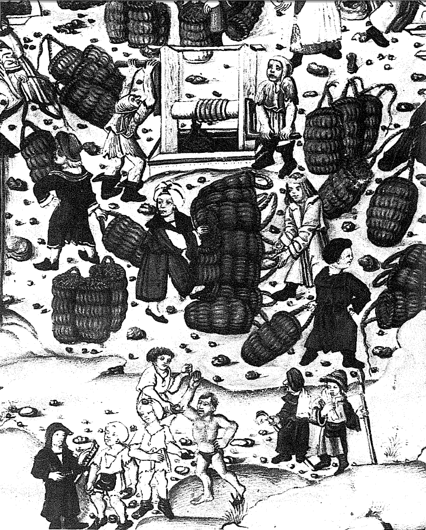
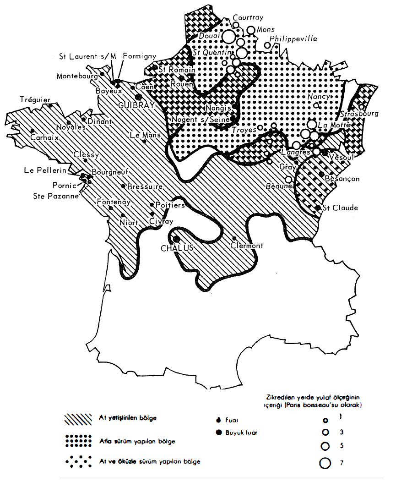

Her şey tekniktir: İnsanların dış dünya üzerindeki şiddetli çabaları, ama aynı zamanda sabırlı ve monoton çabaları; bizim biraz aceleyle devrim olarak adlandırdığımız şu değişimler (top barutu, açık deniz seyrüseferi, matbaa, su ve yel değirmenleri, ilk makinalar), ama aynı zamanda imalat usul ve aletleri ile sayılamayacak kadar çok hareketten meydana gelen, kuşkusuz yenileştirici önemleri olmayan yavaş düzeltmeler de: halat geren tayfa, dehliz açan madenci, pulluğun arkasındaki köylü, örsünün karşısındaki demirci... Bütün bu hareketler, birikimli bir bilginin ürünüdürler. Marcel Mauss “ben etkin bir geleneksel harekete teknik diyorum” diye söylemekteydi; sonuç olarak insanın insan üzerinde çalışmasını gerektiren bir eylem, zamanın başlangıcından beri girişilen ve sürdürülen bir terbiye etme.
Teknik nihayette, bizzat tarihin genişliğine ve zorunlu olarak onun yavaşlığına, ikirciliklerine sahiptir; teknik tarih tarafından açıklanmakta ve onu açıklamaktadır, ama bu korelasyon her iki yönde de tam tatmin edici olmamaktadır. Bütün tarihin aşırı kıyılarına kadar genişletilmiş bu alanda tek bir eylem değil de, çoklu eylem ve çoklu dönüşler ve çoklu “olaylar zinciri” vardır. Kuşkusuz doğrusal bir tarih söz konusu değildir. Çalışmaları hayranlık uyandırmayı sürdüren binbaşı Lefebvre des Noettes, basitleştirici bir materyalizme kurban verme hatasına düşmektedir. IX. yüzyıldan itibaren omuz koşumunun yerini göğüs koşumuna bırakarak ve atların çekim gücünü artırarak, insanların köleliğini giderek yok etmiş değildir (Marc Bloch bu bozucu kısaltmanın karşısında yanlışlıkla yer almıştır); aynı şekilde Kuzey denizlerinden itibaren yayılan kıç dümeninin, muazzam deniz keşiflerinin macerasını, XII. yüzyıldan itibaren hazırladığı, sonra da bunu sağladığı da doğru değildir. Aynı şekilde, L. White'in XV. yüzyıldan itibaren yaygınlaşan gözlüğün, okuyucu sayısını artırarak, Rönesans'ın entelektüel atılımına yardım ettiği iddiasını da, en fazlasından eğlenceli bir şaka olarak kabul edelim. Gerçekte çok sayıda başka faktörü gündeme getirmek gerekmektedir. Örneğin matbaa ve şaka için şaka olsun diye, evlerin iç aydınlatması da genelleşmektedir: işte okuma ve yazma için kazanılan saatler artmaktadır! Ama özellikle, bu yeni okuma ve tanıma tutkusunun, iktisatçıların bilgi konusundaki “arzulanan talep” diyecekleri şeyin nedenlerini sormak gerekmektedir: gözlüğün gelişiminden çok önceleri, daha Petrarca döneminden itibaren, eski yazmalar çılgınca araştırılmış değil midir?
Kısacası, genel tarih veya eğer istenirse, geniş anlamda toplum, tekniğin asla tek başına olmadığı bir tartışmada söyleyecek bir söze, her zaman sahiptir. Toplum, yani yavaş, sağır, karmaşık bir tarih; başka şeyi düşleme güçlüğünü ve tehlikesini uzaklaştıran bilinen, kazanılmış çözümleri inatla tekrarlayan bir hafıza. Kapıyı çalan her icad, gerçek hayatın içine katılmadan önce yıllar, hatta yüzyıllar boyunca beklemek zorundadır. Inventio (icad) yapılmakta, uygulaması (usurpatio) ise, toplumun istenen kabul düzeyine gelmesiyle, çok sonra ortaya çıkmaktadır. Tırpanın durumu böyledir. XIV. yüzyılda, Batı'yı biçen salgınların ardından, schnitter Tod, bir tırpanla silahlanmış ölüm, her yanı saran bir imge haline gelmiştir. Ama bu tırpan, o sıralar yalnızca çayırdan ot biçmeye yaramakta, hasat yapanlar tarafından nadiren kullanılmaktadır. Başaklar az çok yukarıdan ve orakla biçilmekte, samanlar sökülmeden hayvanlara bırakıldığı için, yataklar ormandan toplanan yaprak ve dallarla yapılmaktadır. Kentlerin büyük çaplı genişlemesine, Avrupa'da buğday tarlalarının azalmasına (Alman tarihçilerinin vergelreidung'u), buğdayın tanelerini dökmekle suçlanan tırpan, XIX. yüzyılın başından önce genelleşmeyecektir. Ancak bu tarihten sonra, daha hızlı gitme ihtiyacı ve mümkün hale gelen belli bir tahıl tanesi israfı, bu hızlı aletin öncelikli yayılmasını sağlamışlardır.
Yüzlerce başka örnek aynı şeyi söyleyeceklerdir. Örneğin, endüstri devrimini harekete geçirmeden (veya onun tarafından harekete geçirilmeden?) uzun zaman önce icad edilen buhar makinası böyledir. Sadece ona indirgenmiş olarak, icatların olaysal tarihi, demek ki yalnızca bir yalancı aynalar oyunundan ibarettir ve Henri Pirenne'in harika bir cümlesi, tartışmayı oldukça iyi özetlemektedir: “(Vikinglerin ulaştığı) Amerika, keşfedilir keşfedilmez kaybedilmiştir, çünkü Avrupa’nın ona henüz ihtiyacı yoktur”.
Bu sözün anlamı, tekniğin bazen, insanların özellikle ekonomik ve toplumsal, aynı zaman da psikolojik nedenlerden ötürü tam anlamıyla ulaşamadıktan şu mümkün; bazen de, çabalarının maddi olarak, “teknik olarak” gelip dayandığı şu tavan olduğu değilse, acaba nedir? Bu sonuncu durumda, tavan bir gün delinince, teknik kopukluk canlı bir hızlanmanın hareket noktası olacaktır. Ancak, engeli deviren hareket, hiçbir zaman bizzat tekniğin veya bilimin basit iç gelişmesi değildir; kesinlikle XIX. yüzyıldan önce böyle değildir.
İnsan XV. ile XVIII. yüzyıllar arasında kendi gücüne; evcil hayvanların, rüzgârın, akar suyun, odunun, odun kömürünün, kömürün gücüne sahiptir. Toplam olarak, henüz minik, çeşitli enerji kaynakları. Sonradan meydana gelecek olaylardan öğrendiğimiz üzere, gelişme Avrupa'da XI. ve XII. yüzyıllardan itibaren ve metinlerin ima ettikleri üzere, Çin'de M Ö. IV. binden itibaren kullanılmaya başlayan kömür üzerinde oynamaya, özellikle de bu kömürü demir metalürjisinde sistematik olarak, kok kömürü biçiminde kullanmaya ilişkin olmuştur. Fakat insanlar kömürde tamamlayıcı bir yakıttan başka bir şey bulabilmek için çok zaman harcayacaklardır. Bizzat kokun keşfi de hemen kullanıma yol açmayacaktır.
İnsan, kaslarıyla birlikte vasat bir motoru temsil etmektedir. Beygir gücü cinsinden (bir saniyede 75 kg.'ı bir metreye çıkartan güç) ölçülen kuvveti çok düşüktür: bir koşum atının 0,27-0,57'sine karşılık, 0,03-0,04. Forest de Belidor 1739'da, bir atın yapabildiği işi yapabilmek için 7 kişinin gerektiğini savunmaktaydı. Başka ölçüler: 1800'de bir adam günde “0,3-0,4 ha. sürebilir, 0,4 ha. biçilmiş çayır otunu yayabilir, 0,2 ha. tarlayı orakla biçebilir, aşağı yukarı 100 libre buğdayı dövebilirdi”, açıkçası verim düşüktür.
Ancak, XIII. Louis döneminde bir insan işgününe, bir at işgününün yedide biri değil de, yarısı ücret verilmekteydi (8 ve 16 sol); bu tarife insanın çıkardığı işi fazlasıyla değerlendirmektedir. Bunun nedeni, bu önemsiz motorun, her zaman büyük bir esnekliğe sahip olmasıdır; insan birçok alete sahiptir ve bunların bazıları zamanın çok uzaklarından gelmektedirler: çekiç, balta, testere, kerpeten, bel ve kendi gücüyle hareket ettirdiği ilkel motorlar: delgi, bucurgat, makara, vinç, kaldıraç, pedal, manivela, torna. Batı'ya eskiden, ya Çin'den, ya da Hind'den gelmiş olan bu son üç alet için G. Haudricourt, “beşeri motorlar” gibi uygun bir terim üretmektedir. Basit bir makara çalışan bir insanın üretkenliğini 4, 5 veya daha fazla katına kadar artırmakta değil midir? Mühendis ve fizikçi Gerard Walter beşeri motorun ortalama gücünün aletin işlevinde değerlendirilmesi gerektiğini ve bir beygir gücünün % 13-16'sı olarak saptanabileceğini düşünmektedir (26 Haziran 1980 tarihli mektup). Beşeri motor ve hepsinin en karmaşığı, üzerinde her şeyin basit hareketler haline indirgendiği dokuma tezgâhıdır: önce bir ayak, sonra diğeri pedalları hareket ettirmekte, atkı ipliklerinin önce bir yarısını, sonra diğer yarısını kaldırırken, bu sırada el çözgü ipliğini taşıyan mekiği fırlatmaktadır.
Demek ki insan, tek başına bir olanaklar dizisidir. Beceri, esneklik: Paris'te bir hamal (tanıklık 1782 yılındadır), sırtına “bir atı öldürecek kadar yük” bindirmektedir. P.G. Poinsot, Çiftçilerin Dostu (1806) adlı eserinde, bu geç tarihe göre şaşırtıcı olan şu tavsiyede bulunmaktadır: “tüm toprakların bel ile sürülmesi tercihe şayandır. Bu işleme pulluğunkinden kesinlikle üstün olacaktır ve bu alet Fransa'nın birçok yöresinde tercih edilmektedir; buralarda bu aracı kullanmada sahip olunan büyük alışkanlık, işlemi çok kısaltmaktadır, çünkü tek bir adam 487 metre (kare) toprağı, 65 cm. derinlikte olmak üzere, onbeş günde hareket ettirebilir, ve bu tek sürüm, pulluğun güçlü topraklara ekim yapılmadan önce, dört kere tekrarlamak zorunda olduğunun yerine yeterli olmaktadır; zaten toprak ancak bel ile iyice hareketlendirilebilmekte ve parçalanabilmektedir... İşlenecek geniş bir alana sahip olunmadığında, pulluk ile sürmenin kötü bir ekonomi olduğu görülecektir, ve küçük çiftçilerin hemen tamamının iflas etmesinin temel nedenlerinden biri bu noktada bulunmaktadır... Daha sonra, bel ile işlenen toprakların hasatlarının, diğerlerinkinin üç katı oldukları kanıtlanmıştır. Tarla işlemek için kullanılan bel, bahçe işlerinde kullanılanından en az iki kat daha uzun ve güçlü olmalıdır; bahçede kullanılan bel... toprağı tek parça halinde kaldırmaya ve sonra onu yeteri kadar ezmeye gereken çabaya dayanamayacaktır”.
Bunun basit bir hayal ürünü olduğunu sanmayalım. Kırlarda tarım işçileri, çoğu zaman kendi paylarına düşen parçaları bel ile değilse bile, kazmayla işlemektedirler. XVIII. yüzyılda denildiği gibi, bu “el ile” çalışmak veya “kol gücüyle” işlemektir. Sorun, eğer bu saçma, “Çin tarzı” toprak işleme yöntemi istisna değil de, kural olsaydı, bu durumun sonucu olarak ortaya çıkacak olanı hesaplayabilmektir. Bu durumda Batı kentleri ayakta kalabilir, hatta kendilerini yaratabilirler miydi? Ve hayvan varlığı ne olurdu?
Bu çıplak elli, yalnız adam, Modern çağların Çin'inde monoton bir şekilde görülmektedir. Bir seyyah şöyle kaydetmektedir (1793): insanların çalışması burada yalnızca “en aza malolan olarak kalmamakta, aynı zamanda kötü bir şekilde kullanılmadığına emin olunduğu her seferinde, hiç tasarruf edilmemektedir”, bu kısıta uyulduğuna kimse inanmak zorunda değildir. İnsan kazma sallamakta, pulluğu mandanın yerine çekmekte, suları dağıtmakta, “zincirleme pompalar”ı çalıştırmakta, el değirmenlerini adeta yalnızca tahıl öğütmek için kullanmakta (“bu sonsuz sayıda kişinin işidir”), yolcuları taşımakta, muazzam yükleri kaldırmakta, omuzuna koyduğu uzun tahta bir sopanın üzerinde dengelenmiş ağırlıklar taşımakta, kağıt değirmenlerinin taşını döndürmekte, “başka ülkelerde bu iş için atlar kullanılırken”, kayıkları karadan çekmektedir. Yang-çe-Kiang'tan Pekin'e giden Büyük Kanal'ın üzerinde, “Tien Fi Ça”, yani “Gökyüzünün Kraliçesi ve Efendisi” olarak adlandırılan en büyük yükseltme havuzu, kapıların açılıp kapatılmasıyla hareket ettirilmemektedir. Kayıklar, iki kapağın arasından, bir başkasına bucurgatların ve “kanalın her iki tarafından 400 veya 500 adam, hatta kayığın ağırlık ve büyüklüğüne göre, daha fazlası tarafından çekilen birçok kablo ve halat” sayesinde aktarılmaktadır. Bu durumda, işlerin güçlüğünü ve tehlikelerini vurgulayan peder de Magellan, “her tür mekanik işi bizden daha az araçla ve çok daha kolaylıkla” yapma konusundaki Çin adetini örnek olarak vermekte haklı mıdır? Gemelli Careri de, on yıl kadar sonra (1695), “küçük Tatar atları” kadar hızlı giden, her zaman dört nala koşturan sırt hamallarının sürati karşısında büyülenecektir. Bir Cizvit papazı I657'de, Pekin'de insan gücü ve rüzgâr sayesinde “suyu yüz palme yüksekliğe” fışkırtan bir yangın pompası imal etmiştir. Oysa, Hindistan'da bile, noryalar, yani şeker ve zeytinyağı değirmenleri, koşulu hayvanlarla döndürülmektedir. Ancak, en uç örnek Japonya'da ve XIX. yüzyıldadır; Hokusai'nin bir resmi, adeta inanılmaz bir gösteriyi temsil etmektedir: yalnızca kol gücüyle övütülen şeker kamışı.

Kora Hutna gümüş madeninden ayrıntı, 1490'a doğru. Cevher sepetleri, iki kişinin çalıştırdığı bir çıkrıkla yukarı çıkartılmaktadırlar. Bu aynı maden atların çeldiği büyük çıkrıklara da sahiptir. Fakat bunlar hâlâ ilkel araçlardır. Bunun tersine, elli yıl sonra, Agricola'nın çağında, kocaman su dolapları yukarı çıkartmayı sağlamaktadırlar.
Cizvit papazlar, 1777'de bile şöyle açıklamaktadırlar: “Makine ve iş hayvanlarının yararı sorununu, en azından toprağın ancak insanlarını doyurmaya yetebildiği bir ülkede sonuca bağlamak o kadar kolay değildir. Bu ülkede makinalar ve iş hayvanları neye yarayacaklardır? Halkın bir bölümünü philosophiste (sic.), yani toplum için kesinlikle hiçbir şey yapmayan ve ihtiyaçlarının, refahlarının ve daha da kötüsü, maskara ve gülünç fikirlerinin yükünü topluma taşıtan kişiler haline getirmeye yarayacaklardır. Bizim kır insanlarımız (delillendirmeyi bu şekilde yapanlar Çinli Cizvit- lerdir), bazı ilçelerde fazla kalabalık veya işsiz olduklarında. Büyük Tataristan'a, tarımımızın gelişme kaydettiği yeni fethedilen ülkelere çalışmaya gitmektedirler”. Ve işte makûl gözüken budur. Zaten Çin tarımının o sıralar güçlü bir iç ve dış iskân hareketine tanık olduğu doğrudur. Fakat bu aynı zamanda, tarımsal gelişmenin o sıralar, nüfus artışına refakat etmeye ve özellikle de önüne geçmeye kadir olmadığını kaydetmenin iyi bir fırsatıdır.
İnsanların Kara Afrika'daki veya Hindlerdeki çalışmalarından uzun uzadıya söz etmek gerekir mi? Evrengzeb'in Kaşmir'e olan yolculuğunda, Himalayaların ilk güç yokuşlannda, develerin yüklerini indirmek gerekmiştir: bunların yerine 15-20.000 hamal geçmiştir. Hamalların hizmetle yükümlü olmalarına karşılık, develer “100 libre yük için 10 ekülük kazanca tav” olmuşlardır. İsraf denilecektir. Ekonomi, tasarruf diye düşünecektir başkaları. Bicetre hastanesinde (1788) kuyu suyu 12 at tarafından çekilmekteydi, “fakat bugün bile büyük bir avantajın sağlandığı bilgece bir ekonomi ile, güçlü ve sağlam mahkûmlar artık bu iş için kullanılmaktadır”. Ve bunu bu tarzda söyleyenin ahlâkçı Sebastian Mercier olduğunu söylersem! Aynı şekilde, daha sonra Brezilya kentlerinde zenci kölelerin, fırsat çıktığında atların yerine geçtiklerini ve aşırı yüklü arabaları kollarıyla çektiklerini görüyoruz.
Gelişmenin koşulu, kuşkusuz insanların heryerde hazır işgücü ile diğer ikâme enerji kaynakları arasındaki makûl bir dengedir. İnsanın bu kaynaklarla, Antik dünyada veya insanların ucuza çalışmalarının sonunda makinacılığı kilitlediği Çin'de olduğu gibi, ölçüsüzce rekabet etmesi, yanıltıcı bir kârdır: Eski Yunan ve Roma'nın köleleri, Çin'in fazlasıyla etkin ve aşırı kalabalık kuleleri. Gerçekte insanın belli bir değer kazanması olmaksızın gelişme olmaz. İnsanın belli bir maliyeti olan bir enerji kaynağı haline gelmesi ve ona yardım edilmesinin, daha da iyisi ikâme edilmesinin düşünülmesi gerekir.
İnsanın bir nöbet devri, evcil hayvanların sayesinde çok erkenden gerçekleşmiştir, ama bu hayvanlar dünya ölçeğinde çok kötü dağılmış bir lükstürler. Bu “motorların” tarihi, eğer işin başında Eski ve Yeni dünyalar birbirinden ayrılacak olursa, daha açık hale gelecektir.
Amerika'da her şey oldukça basite benzemektedir. Amerika kızılderililerinden kalan yegâne önemli miras lama olmuştur. “Andlar koyunu” adını da alan bu evcil hayvan, oldukça kötü bir taşıyıcıdır, ama yüksek Cordillera'nın seyrelmiş havasına yegâne uyum sağlayabileni de odur. Diğer bütün hayvanlar (vikunya ve hindi hariç) Avrupa'dan gelmişlerdir: sığır, koyun, keçi, at, köpek, kümes hayvanları. Ekonomik hayat için bunların en önemlileri, zaman içinde giderek esas taşıma unsurları haline gelen katırlardır. Bu durumun istisnası Kuzey Amerika ve sömürge Brezilya'sının bazı bölgeleri ile, bunlardan fazla olmak üzere, öküzler tarafından çekilen yüksek tekerlekli arabaların XX. yüzyıla kadar kural olarak kaldığı Arjantin pampasıdır.
Katır kervanları geniş mekânlar üzerinde, gürültülü çıngıraklarını dayatmışlardır: Alexander von Humboldt 1808'de, bunların Yeni İspanya'daki mal ve mısır unu taşınmasındaki önemlerini kaydetmiştir. Bunlar olmazsa hiçbir kent, özellikle de çok zengin Mexico yaşayamaz; bir on yıl kadar sonra, Auguste de Saint-Hilaire'in dikkatli tanığı olduğu Brezilya'da da aynı durum söz konusudur. Durakları ve zorunlu geçişleriyle, bu dolaşım “katır istasyonlarına sahiptir. Örneğin Rio de Janeiro kapılarındaki Serra do Mar'ın dibindeki Porto da Estrella bunlardan biridir. Kervanların efendileri, Brezilyalı tropeiros, pamuk üretimini, kısa bir süre sonra da kahve üretimini finanse etmektedirler. Bunlar erken bir kapitalizmin öncüleridir.
Geniş Peru krallığında, 1776'da 500.000 katır, kıyı veya Andlar trafiğinde, veyahut da Lima'daki arabaların koşum hayvanı olarak kullanılmaktadır. Muazzam genişlikteki krallık, her yıl güneyden, Arjantin pampasından gelen 50.000 kadar katır ithal etmektedir. Katırlar, pampada uzaktan gözetim altında tutularak, vahşi durumda büyümekte, sonra atlı peones onları kuzeye doğru, binlerce hayvandan meydana gelen muazzam sürüler halinde, Tucuman ve Salta'ya kadar kovalamaktadırlar, burada onları vahşi bir şekilde eğitmeye başlamaktadırlar; katırlar sonunda ya Peru'ya, ya Brezilya'ya ve özellikle de Sao Paolo eyaletindeki kocaman Sorocaba fuarına ulaşacaklardır. Bu üretim ve bu ticaret, Marcel Bataillon'a bugünün otomobil endüstrisini “ve motorlaşmaya açık bir kıtadaki iç pazarını’’ hatırlatmaktadır.
Bu ticaret, ilkel Arjantin için Peru gümüşüne ve Brezilya altınına ortak olmanın bir biçimidir. Peru'da 500.000 katır, herhalde bir o kadar Brezilya'da -Yeni İspanya’nınkiler-, artı başka yerlerde, Karakas veya Bogota Santa Fe'si kaptanlıklarında, veyahut Orta Amerika'da kullanılanlar, kesinlikle bir veya iki milyon yük ve binek hayvanı (koşum hayvanı nadiren) vardır, 5 veya 10 kişiye bir hayvan diyelim, yani duruma göre, değerli madenlerin, şekerin, mısırın hizmetinde muazzam bir “motorizasyon” çabası. Dünya'da, Avrupa hariç, bunun hiçbir benzeri yoktur. Ve Avrupa'da da pek öyle önlerde değildir. 1797 İspanya'sında 10 milyon nüfus için (aşağı yukarı İber Amerika'sının toplam nüfusuna eşit) yalnızca 250.000 katır bulunmaktaydı. Daha kesin araştırmalar, Amerika'ya ilişkin rakamları değiştirseler bile, oransızlık büyük olarak kalmaya devam edecektir.
Avrupa'nın diğer evcil hayvanları da Yeni Dünya'da çoğalmışlardır; özellikle öküz ve at. Boyunduruğa vurulan öküzler, arkalarında ağır pampa arabalarını ve sömürge Brezilya'sında da, tekerlekleri bütün tahta parçalarından olan, gıcırtılı, karakteristik carro de boi'yı çekmektedirler; vahşi sürüler de oluşturmaktadırlar. Bir “deri uygarlığı”nın Arjantin pampasındakine benzeyen manzaralar hatırlattığı, Brezilya'nın Rio Sao Francisco vadisindeki ve az az pişirilmiş olarak tüketilen, ızgara etlerinin aşırı bolluğuyla Rio Grande do Sul'deki durum böyledir.
Ata gelince, aşırı bolluğuna rağmen, dünyanın heryerinde olduğu gibi, burada da şedid ve erkeklik değerlerine düşkün bir aristokrasiyi, hayvan sürülerinin sahipleri ve onları yöneten peones aristokrasisini temsil etmektedir. Daha XIII. yüzyılın sonunda, pampada dünyanın en şaşırtıcı atlıları olan gaucho'lar koşmaktadır. Ö sıralar bir at ne demektir? İki riyal. Biri kaybedilince on tanesi bulunmakta, at size verilmekte veya kendiniz almaktasınız. Bir öküzün ticari değeri bile yoktur, kim onu lasso veya bolas ile yakalarsa, ona ait olmaktadır. Ama bir katır Salta'da 9 pesoya kadar satılabilmektedir. Buenos Aires'te zenci bir köle, çoğu zaman 200 peso ettiği için, Yeni Dünya bu tarifeden, bir de üstelik koskoca bir hayvan evrenini teslim ettiği insanın değerini artırmaktadır.
Eski Dünya'da oyun uzun zamandan beri başlamıştır. Bunun sonucunda çok eski, karmaşık durumlar meydana gelmiştir.
Çift hörgüçlü develerin ve Hecin devlerinin Eski Dünya'nın tüm oyuk kesimine, kesintisiz olarak Atlantik Sahra'sından Gobi Çölüne kadar uzanan, şu nihayetsiz sıcak ve soğuk çöller zincirine yayılmasından daha rasyonel bir şey olamaz, ama a posteriori olarak. Sıcak çöller, soğuğa dayanıksız ve dağlık ülkelere hiç yatkın olmayan bir hayvan olan Hecin devesinin alanıdır; soğuk çöller ve dağlar Asya devesine aittir, bunların paylarına düşen alanlar, Anadolu ve İran'ın yukarı ve aşağısında kalmaktadırlar. Bir seyyahın dediği gibi (1694), “takdir-i ilahi iki cins deve yapmıştır, biri sıcak ülkeler, diğeri de soğuk olanlar için”.
Fakat bu bilgece paylaşıma varmak için, uzun bir süreç gerekli olmuştur. Hecin devesi Sahra'ya ancak Hristiyanlığın başlangıcının civarında ulaşabilmiş ve bu bölgeye ancak VII. ve VIII. yüzyıllardaki-Arap fethiyle ve daha sonra, XI. ve XII. yüzyıllar esnasında “büyük göçebeler”in gelmeleriyle nüfuz edebilmiştir. Orta Asya devesinin batı yönündeki fethi ise, XI. ve XVI. yüzyıllar arasında Türklerin Küçük Asya ve Balkanlardaki ilerlemeleri sayesinde tamamlanmıştır. Tabii ki Hecin devesi ve Orta Asya devesi birbirlerine ait alanlara taşmaktadırlar, Hecin develeri İran'ı kat'etmekte, atlar gibi yüksek fiyattan satıldıkları Hindistan'a ulaşmaktadırlar; bu develer Sahra'ya nüfuz ederek, pirogların ve hamalların nöbeti onlardan devraldıkları, Kara dünyanın sınırlarına kadar ulaşmaktadırlar. Hatta bunlar bir an için, Merovenj dönemi Galya'sının kuzeyine kadar ilerlemişlerdir. Ve bu arada Doğu'da, Orta Asya develeri Balkan ülkelerini, tam olmamakla birlikte, fethetmişler ve buralarda XIX. yüzyıla kadar dolaşmışlardır. 1529'da bunlar Viyana önlerindeki Türk ordusunu iaşe etmektedirler. Aynı şekilde. Eski Dünya'nın öteki ucunda, Kuzey Çin, Orta Asya devesinin ilerlemesi sonucu istila edilmiştir. Bir seyyah (1775), el arabalarının yanında “(sırtında) koyun taşıyan” bir deveyi kaydetmektedir.
İslam alemi yerel taşımalar, tarla sürme, bostan dolabı (Akdeniz civarında, eşeğin hizmetini çok eskilerden beri sunuyor olmasına rağmen), nihayet Sahra'nın, Yakın Doğu'nun, Orta Asya'nın uzun mesafeli kervan bağlantıları için, yeni çevik bir eski kapitalizmin aktifine yazılması gereken her tür bağlantı için güçlü bir hayvanın adeta tekeline sahip olmuştur. Hecin ve Orta Asya develeri oldukça büyük yükler taşımaktadırlar; en az güçlü olan hayvanlar için 700 libre, oldukça sık olarak 800 libre (Erzurum çevresinde olduğu gibi), 1708 tarihli bir belgeye göre, Tebriz ile İstanbul arasında 1000-1500 libre. Tabii ki, 500 g.'dan düşük, hafif libreler söz konusudur; ortalama yük kabaca 4 veya 5 kental arasında yer almaktadır. 6.000 develik bir kervan, 2.400-3.000 ton demektir, yani o dönem için 4 veya 6 hürmetlice yelkenlinin yükü. Eski Dünya'nın iç iletişimlerinin efendisi olan (ve uzun bir süre) İslamiyet, bu alette ticari önceliğinin belirleyici unsurunu bulmuştur.
Öküz (manda ve Asya öküzünden daha fazla olmak üzere) ise, kendi hesabına tüm Eski Dünya'ya yayılmış, yalnızca kuzeyde, Ren geyiğinin (vahşi veya evcil) alanı olan Sibirya ormanları tarafından ve güneyde de, özellikle Afrika'da çe-çe sineğinin ona yolu kapattığı tropikal ormanlar tarafından durdurulmuştur.
Bazen bir rantiye hayatı sürdürdüğü Hindistan'da, öküz işte bir sabanın boyunduruğuna vurulmuştur, yaldızlı bir arabayı çekmektedir, bir değirmeni döndürmektedir, bir askere, hatta bir senyöre binek hayvanı olarak hizmet etmektedir. Hatta bu ülkede, 10.000 hayvana kadar ulaşabilen muazzam konvoylar, ilginç Muriler kastından olan kervancıların yönetimi altında, buğday veya pirinç bile taşımaktadırlar. Saldırı halinde, erkekler ve kadınlar kendilerini okla korumaktadırlar. Fakat Kuzey Hindistan'ın ağaç ve duvarlarla çevrelenmiş dar yollarında, iki kervan karşılaştığında, bu nehirleri birbirine karışmadan, birbirlerinin ardından akmaya bırakmak gerekmektedir; diğer yolculara gelince, onlar ise iki veya üç gün boyunca, hayvanların arasında ne ileri, ne de geri gidemeden, kilitlenmiş durumda kalmaktadırlar. Bu Hind öküzleri kötü beslenmekte, hiçbir zaman ahırda barındırılmamaktadırlar. Çok daha az sayıda olan Çin mandasına gelince, bu hayvan az çalışıyorsa da, bundan da az yemekte ve kendi başının çaresine bakmak zorunda kalmaktadır; biraz vahşi olan bu hayvan, yolculardan kolaylıkla ürkmektedir.
Özellikle Avrupa'da alışılmış manzara: boyunduruk altında bir çift öküz; arkalarında (İspanyol Galiçya'sında olduğu gibi, bugün bile) bir kağnı. Öküz bir at gibi de koşulabilir: Japonlar ve Çinliler (“boynuzlardan değil” de, göğüs koşumu) ve bazen de Kuzey Avrupalılar (omuz koşumu) böyle yapmaktadırlar. Öküz koşum hayvanı olarak çok büyük olanaklara sahiptir. Kitabı 1513'te yayınlanan, İspanyol tarımcısı Alonso de Herrera, öküzlerin koşulmasına avukatlık etmekte, katırlara karşı çıkmaktadır; katırlar daha hızlı gitmektedirler, ama öküzler daha derin ve daha ekonomik bir şekilde sürüm yapmaktadırlar. Bunun tersine, Fransa'da Charles Estienne ve Jean Liebaut ata methiye düzmektedirler. “Bourbonnais veya Forez bölgesinin en iyi üç öküzü, Fransa'nın (bundan Ile-de-France'ı anlayınız) veya Beauce'un tek iyi bir atı etmez” diye 1564'te yazmaktadırlar. François Quesnay eski tartışmayı, 1758'de yeniden ele alacaktır. Onun zamanında at kullanan kapitalist bir tarım, özellikle öküz kullanan geleneksel bir tarımı geriletmektedir. Günümüzde yapılan ölçümlere göre, atın çekim gücü öküzünkine eşittir. Fakat tüm hesaplar yapıldığında (at daha hızlıdır, çalışma günü daha uzundur, ama daha çok yemekte ve yaşlandığında daha fazla değer kaybetmektedir, çünkü öküz kasaba gönderilebilir), aynı işin yapılması halinde, öküz rakibinden % 30 daha pahalıya gelmektedir. Polonya'da XVII. yüzyılda, toprağı ölçmek için kullanılan bir birim, bir atın veya bir çift öküzün işleyebileceği yüzeye tekâbül etmekteydi.
At tarihinin eski bir aktörüdür. Mâcon yakınlarındaki Solutre'de bulunan büyük at mezarlığının kanıtladığı üzere, Fransa'da Neolitik Çağ'dan beri mevcuttur ve etrafa yayılmıştır; M.Ö. XVIII. yüzyıldan itibaren Mısır'da vardır ve Roma döneminde Sahra'yı aşmıştır. At belki de Cungarya kapısını çevreleyen bölgelerden, bizzat Asya'nın göbeğinden kaynaklanmaktadır? Her halükârda Avrupa mekânına öyle iyi dağılmıştır ki, M.S. XVI. ve XVII. yüzyıllarda yabani atlar, daha doğrusu yabaniliğe geri dönmüş olan atlar, Kuzeybatı Almanya orman ve çalılıklarında, İsviçre dağlarında, Alsace'da, Vosgelar'da yaşamaktadırlar. Daniel Spekle adındaki bir haritacı, 1576'da bu yabani atlardan söz etmektedir: “Vosges ormanlarında bu atlar tüm mevsimlerde kendi başlarına üremekte ve beslenmektedirler. Kışın kayaların altında barınmaktadırlar... Aşırı derecede ürkek olan bu atlar, dar ve kaygan kayalıklarda nereye basacaklarını çok iyi bilmektedirler”.
Demek ki at eski bir Avrupalıdır. Birçok yüzyıla dayalı olan bu alışkanlık, koşumlarının giderek artan bir şekilde iyileştirilmesine olanak vermiştir (Batı'da omuz koşumu IX. yüzyılda ve eyer, üzengi, gem, dizgin, koşum takımı, birbirine bağlanmış halde koşum, demir aksam, bundan biraz önce, biraz sonradır). Roma döneminde kötü koşumları olan at (göğüs koşumu hayvanı nefessiz bırakmaktadır), nisbeten düşük bir yükü çekebilmekle ve iş olarak dört köleden fazla etmemektedir. İşte XII. yüzyılda, at omuz koşumu sayesinde, tıpkı gücünün dört veya beş katına çıkartılmış bir motor gibi, aniden iyileştirilmiştir. O zamana kadar savaş hayvanı olan at, artık tapan çekme, sürüm yapma ve taşımacılıkta çok büyük bir rol oynayacaktır. Bu önemli dönüşüm, bir dizi başka değişimin içine katılmaktadır: nüfus artışı, ağır pulluğun yayılması, kuzey bölgesinde üçlü rotasyonun yayılması, verimlerin artması, Kuzey Avrupa'nın aşikâr gelişmesi.
Ancak atın dağılımı çok eşitsiz olarak kalmaktadır. Çin'de nisbeten az at bulunmaktadır. Peder de Las Cortes (1626) “Çançin fu krallığında ancak birkaç tane gördük ve bunlar adımları kısa, küçük hayvanlardı; bunları nallamıyorlar ve mahmuz kullanmıyorlar. Eyerleri, gemleri tam bizimkiler gibi değil (XVIII. yüzyılda bile hâlâ tahta eyerler, dizgin yerine geçen basit ipler vardır). Fuçinsu ve Kanton krallıklarında onlardan biraz daha fazlasını gördük, ama hiçbir zaman çok sayıda değil. Bana dağlarda çok sayıda, yabaniliğe dönmüş olan ve yakalanıp, eğitilme adeti bulunan at olduğu söylendi”. Katırlara gelince, bunlardan az sayıda vardır ve başka bir seyyahın dediğine göre, daha kolay beslendikleri ve yorgunluğa daha fazla dayandıkları için atlardan daha pahalıya satılmalarına rağmen, bu katırlar özellikle küçüktürler. Eğer bir seyyah Çin'de atla yolculuk yapmak istiyorsa, yola çıkarken iyi bir hayvan seçmesi gerekmektedir, çünkü posta menzilleri yalnızca imparatorun hizmetine ayrıldığı için at değiştiremeyecektir. Bilgelik gene de, hamallar tarafından nöbetleşe taşman, rahat tahtırevanı tercih etmektedir. Zaten, yalnızca bürolara teslim etmenin yeterli olduğu, harika bir şekilde örgütlenmiş olan bagaj ve mal taşıması (varışta bunlar ilgili büroda olacaklardır), çoğu zaman hamallar veya bir veyahut iki kişinin çektiği tek tekerlekli arabalarla yapılmaktadır, katır veya eşek nadiren kullanılmaktadır. Kuşkusuz “Çin imparatorunun, süvariden yana dünyanın en güçlü hükümdarı” olduğu söylenebilir ve Magaillans 1668'de, kesine benzeyen rakamlar vermektedir: ordu için 389.000, imparatorluk ölçeğinde, hükümdarın hizmetine tahsis edilmiş olan posta menzilleri için 175.000 at. Ancak bu durum, 1690'da Elütler Hanına karşı girişilen sefer esnasında, Pekin'de, mandarin olsalar bile, özel kişilerin elindeki tüm atların ordu için müsadere edilmesini engellememiştir. Bu arada, uyrukların toplam olarak, hükümdarlarından daha fazla ata sahip olup olmadıkları sorulabilir. Fiili durumda, birkaç istisna dışında (örneğin Seçuen'in küçük atları) Çin'in at talebi, Moğolistan ve Mançurya sınırlarında kurulan panayırlar sayesinde, dışarıdan karşılanmaktadır: Ka-Yuan veya Kuan Min panayırları veyahut, 1467'den itibaren Fu-Şun civarındaki panayırlar. Öte yandan, XVIII. yüzyılın başına ait bir bilgiye göre, imparatorun bu panayırlardan yaptığı alımlar, yılda 7.000 iken, “senyörler, sivil ve asker mandarinlerinki” ve halkın geriye kalan kısmininki “bu rakamın” yalnızca “iki veya üç katına” çıkmaktaydı. Yani, kuzeyde yılda en fazlasından 28.000 at satın alınmaktaydı. Bu az bir şeydir.
At, Hindistan veya Kara Afrika'da daha da nadirdir. Gerçek büyük lüks nesneleri olan Fas atları, Sudan'da altın tozu, fildişi ve kölelerle takas edilmektedirler: XVI. yüzyılın başında bir at için 12 köle, daha sonra gene de 5 tane. Hürmüz'de, İran'dan alınan atları Hindlere taşımak için filolar donatılmaktadır. Goa’da bir at 500 pardoe'ye, yani Hind Moğol hanının 1.000 rupisine satılırken, aynı sıralar genç bir köle 20-30 pardoe etmektedir.
Bu kadar yüksek fiyata satın alınan bu at, arpa ve yulaf olmaksızın nasıl yaşayacaktı? Tavernier 1664'te, “atlara yem olarak, şişman ve boynuzlu olup, iki küçük değirmen taşı arasında ezildikten sonra ıslatılan -çünkü sertlikleri hazmın uzun sürmesine neden olmaktadır- bir cins baklagil verilmektedir. Bu baklagil atlara sabah ve akşam verilmektedir; onlara, iki libre un içine karıştırılan bir o kadar kaba kara şeker yutturulmakta ve küçük yuvarlak lokmalar halinde boğazlarından içeri sokulan bir libre yağ verilmektedir; bundan sonra ağızları özenle yıkanmaktadır, çünkü atlar bu yemden iğrenmektedirler. Gün boyunca onlara yalnızca, kökleriyle birlikte sökülen ve toprak veya kum kalmasın diye özenle yıkanan, bazı tarla otlarından başka bir şey verilmemektedir” diye yazmaktadır. Olağan olarak arabalara (Kore) öküzlerinin koşulu olduğu Japonya'da, at özellikle soylu bineğidir.
Müslüman ülkesinde, at hayvan aristokrasisini temsil etmektedir. Hemen hemen başlangıcından beri, bundan da fazlası, ilk büyük başarılarından sonra islamiyetin vurucu gücüdür. 1590'a doğru Giovanni Batero Ulah, Macar, Leh, Türk süvarilerinin üstünlüğünü kabul etmekteydi: “Eğer yolunu kesmişlerse, onlardan kaçarak kurtulamazsın ve eğer saldırın karşısında çözülmüşlerse, onları izleyemezsin, çünkü atmaca gibi ya üstüne çökmekte, ya da bir hamlede kaçıp kurtulmaktadırlar". Bunun dışında, İslam aleminde at kaynamaktadır: bir seyyah (1694) İran'da 1.000 atlı kervanlar görmüştür. Osmanlı İmparatorluğu 1585'te, askeri bir açıdan, Asya'da 40.000, Avrupa'da 100.000 at demektir; elçinin demesine göre, düşmanı İran'ın 80.000 atı vardır. Demek ki etkileyici “parklar”. Gerçekten de, büyük at konvoylarının toplandıkları Üsküdar'daki muazzam manzaranın tek başına kanıtladığı üzere, Asya bu savaş atı imalatında çok öndedir; at kayıkları bu atları daha sonra, Üsküdar'dan İstanbul'a taşımaktadırlar.
Theophile Gautier XIX. yüzyılda bile, İstanbul'da çok sayıda safkan Necid, Hicaz, Doğu Anadolu atı görmekten heyecanlanmıştır. Fakat buna karşılık, Üsküdar iskelesinin karşısında “yaldızlı ve boyalı", “üzerine bir tente" geçirilmiş, bir cins Türk faytonu olan araba'lar sıraya girmektedir, ama bunlara “kara mandalar ve gümüşi bir bozluktaki öküzler” koşulmuştur. Gerçekte, at XIX. yüzyılda hâlâ askere, zengine, soylu kullanımlara tahsis edilmiş durumdadır. Tabii ki atlar İstanbul'da dolap beygirliği yapabilirler; ve Batı Balkanlarda koca nallarla nallanmış küçük atlar taşımacılık yapmaktadırlar. Fakat bunlar uşak takımıdır. Bunlar, daha dün, 1881'de bile bir seyyahın dediği üzere, Fas'ta Maragan'da 18 yaşında bir köle 16 düka, bir çocuk 7 düka ederken, 40-50 düka eden atlardan değillerdir. At Küçük Asya'da, sürüm hayvanı olarak öküz ve devenin yerine, ancak Birinci Dünya Savaşından sonra, 1920'lere doğru, nihayet geçebilmiştir.
Bu süvariler evreninin karşısında, Avrupa kendi kaynaklarını geliştirmekte yavaş kalmıştır. Bunun deneyini, zaman kendine ait olmak üzere yapmıştır. Poitiers savaşından sonra (732), kendini korumak ve ayakta kalabilmek için, at ve süvari sayısını artırmak zorunda kalmıştır: şövalyenin çarpışma esnasında bindiği kocaman destrier, onu olağan zamanda taşıyan palefroi, artı at uşağının adi roussin'i. İslam aleminde olduğu gibi, Hıristiyan aleminde de, burada söz konusu olan, gerilimleri ve bazen gevşemeleriyle bir savaş çabasıdır. İsviçrelilerin Yavuz Charles'ın süvarilerine karşı kazandıkları zafer, Batı'da piyadeye, mızrakçılara, daha sonra da çakmaklı tüfekçilere dönüşü belirlemiştir. XVI. yüzyıldaki İspanyol terdo'su, piyadenin zaferidir. Aynı şekilde, Türk cephesinde de Yeniçeri ata binmeyen askerin egemenliğini korumuştur. Ancak Türk süvarisi, Batı süvarisinden, kıyaslanamayacak kadar üstün olmayı uzun süre devam ettiren sipahiler, yeniçerilerin yanında önemli kalmaya devam etmişlerdir.
Avrupa'da iyi atlar altın pahasına satılmaktadır. Cosimo de Medici 1531'de Floransa'ya yeniden yerleştiğinde, 2.000 süvariden oluşan bir muhafız birliği kurmuş, bu gösterişli haşmet yüzünden iflas etmiştir. İspanyol süvarisi 1580'de kolay Portekiz fethini hızlı adımlarla gerçekleştirmiş, fakat Alba dükü hemen at ve araba eksikliğinden yakınmıştır. İzleyen yüzyılda da aynı kıtlık söz konusudur, örneğin Katalonya savaşı (1640-1659) ve Fransız ordusunun her yıl biraz olmak üzere, dışarıdan alınabilecek olan 20.000 veya 30.000 ata bağımlı olduğu, XIV. Louis'nin tüm saltanat döneminde. Frizya, Flollanda, Danimarka, Berberistan'dan yapılan sistematik damızlık atımlarıyla, XIV. Louis tarafından Fransız haralarının örgütlenmesi, XVIII. yüzyılın tümü boyunca yabancı atlara başvurma zorunluğunu yok edememiştir.
Napoli ve Andalusya'da güzel atlar yetiştirilmekteydi: büyük Napoli atları, İspanyol aygırları. Fakat Napoli kralı veya İspanya kralının torpili olmadan, hiçkimse bunları, altın pahasına bile edinemezdi. Tabii ki, her iki yanda da faal bir kaçakçılık vardır; hatta Katalan sınırında passador de cavalls, bu alışılmadık gözetimin kendine tevdi edilmiş olduğu Engizisyon'un şimşeklerine maruz kalma tehlikesiyle karşı karşıyadır. Güzel atlar, soylu atlar, şahinler satın alabilmek için, her halükârda Mantova markisi gibi, Kastilya'dan Türkiye ve Kuzey Afrika'ya olan pazarları tarayacak adamlara sahip olacak kadar zengin olmak gerekmektedir. Kadırgaları (1562'de kurulan Saint-Etienne tarikatına mensup olanlar) Akdeniz'de korsanlık yapan Toskana büyük dükü, güzel atlardan meydana gelen armağanlar karşılığında Cezayir korsanlarına hizmet sunmaktadır. XVII. yüzyılda Kuzey Afrika ile olan ilişkiler daha kolay hale geldiğinden, Marsilya'ya deniz yoluyla sevkedilen Berberi atları, Beaucaire panayırlarında sürekli olarak satılmaktadırlar. Kısa bir süre sonra, İngiltere VIII. Henry'nin saltanat döneminden itibaren, daha sonra da Fransa XIV. Louis'nin çağından itibaren ve XVIII. yüzyılda haraların çoğaldığı Almanya, ithal Arap atlarından hareketle, safkan yetiştiriciliğine girişeceklerdir. Buffon “dünyanın en güzel atları ya doğrudan, ya da dolaylı olarak onlardan (Arap atları) elde edilmektedir” diye açıklamaktadır. Böylece Batı'da ırkların aşamalı bir ıslahı söz konusudur. Ve hayvan varlığının artışı. XVIII. yüzyılın başında, prens Eugen'ın Türklere karşı göz kamaştırıcı zaferini sağlayan Avusturya süvarisi, kısmen bu gelişmelerden hareketle doğmuştur.
Batı'da süvari için, bu binek hayvanı yetiştiriciliğine rakip olarak, ordunun iaşesi ve top çekimi için vazgeçilmez nitelikte olan, koşum hayvanı yetiştiriciliği de gelişmektedir. 1580'de Portekiz'i istila eden Alba dükünün ordusu, çok sayıda arabanın müsadere edilmesi sayesinde, hızla ilerlemekledir. Daha 1494 Eylülünde VIII. Charles'ın ordusu, öküzler tarafından değil de, “Fransız tarzında traş edilmiş, kuyruksuz ve kulaksız” büyük atlar tarafından çekilen toplarıyla geçit yapan sahra topçusuyla, İtalya halklarını şaşırtmaktaydı. XIII. Louis dönemine ait bir elkitabı, topu olan 20.000 kişilik bir birliğin yer değiştirmesi için gereken her şeyi saymaktadır. Diğerlerinin arasında, muazzam sayıda at: mutfak eşyası, bagajlar, çeşitli subayların sofra takımları, sahra demircisinin, marangozun aletleri, cerrahın sandıkları, ama özellikle toplar ve mühimmat için. En büyük parçalar olan bataryalar, esas parçanın kendisi için en azından 25 at, artı barut ve gülleler için bir düzineden fazla at gerektirmektedir.
Bunlar, giderek artan bir şekilde güneye ihraç edilen, kuzeyin iyi atlarına ait işlerdir. Milano, en azından XVI. yüzyılın başından itibaren, bu atlardan Alman tüccarlarından satın almaktadır; Fransa ise, Metz'deki Yahudi perakendecilerden almaktadır; Languedoc bu atları aramaktadır. Fransa'daki yetiştirme alanları belirginleşmektedir: Brötanya, Normandiya (Guibray panayırı), Limousin, Jura...
At fiyatının XVIII. yüzyılda, nisbi olarak düşüp düşmediğini bilmiyoruz. Ancak, Avrupa'nın bir cihazlanması, aşırı cihazlanması söz konusudur. XIX. yüzyılın başında İngiltere'de at hırsızlığı ve bunlara yataklık edenler, tek başlarına bir toplumsal kategori meydana getireceklerdir. Lavoisier, devrim arefesinde Fransa'da 3 milyon öküz ve 1.560.000'i tarımda çalışan (bunun 960.000'den biraz fazlası yalnızca atların kullanıldığı, 600.000'i de öküzlerin de çalıştıkları bölgelerde bulunmaktadır) 1.780.000 at hesaplamaktadır. Bunlar, 25 milyon nüfusa sahip olan bir Fransa için olan rakamlardır. Eşit oranlar içinde, Avrupa 14 milyon at ve 24 milyon öküze sahip olmalıdır. Bu onun güç hanesine yazılması gereken bir durumdur.
Avrupa'da katırın da rolü vardır: İspanyol tarımında, Languedoc'ta, başka yerlerde. Quiqueran de Beaujeu, Provence hakkında “fiyatları çoğu zaman atlarınkini aşan” katırlardan söz etmekte ve katır ve katırcı sayısını, onların işlerinin hareketini bilen bir tarihçi, bunlardan XVII. yüzyıl Provence’ının ekonomik hayatının ritmlerini çıkarsamaktadır. Nihayet, arabalar ancak Brenner gibi, bazı ayrıcalıklı Alp yollarından geçebildikleri için, diğer yollar yalnızca katır taşımacılığının alanı olmaktadırlar; hatta Suse'de ve Alplerdeki diğer katır istasyonlarında, bu hayvanlardan “büyük arabalar” olarak söz edilmektedir. Önemli eşek ve katır yetiştirme merkezleri arasında, Fransa'nın Poitou'sunu da işaret edelim.

FRANSA'DA XVIII. YÜZYILDA AT YETİŞTİRİCİLİĞİ
Dikkat edilmesi gereken hususlar: 1 At yetiştirilen bölgeler, 2 Açık tarla, üçlü rotasyon, büyük yulaf pazarları ve atın egemen kullanımına sahne olan kuzeydoğu'nun yaklaşık sınırları. Bu bölgenin iki alanı nettir, ama kesişme alanları da vardır (Normandiya, Jura, Alsace vb.). Kuzeydoğu Fransa’nın dışında, öküz koşumuyla sürüm egemen kuraldır. Katır lehine istisnalar: Provence, Languedoc ve Dauphine’nin bir bölümü.
Gündelik iaşesi, iç ilişkileri, yük arabaları, kiralık arabaları için ata bağımlı olmayan hiçbir kent yoktur. Paris, 1789'a doğru yaklaşık 21.000 ata sahiptir. Bu, sürekli olarak yenilenmesi gereken bir kitledir. Konvoyların ardı arkası kesilmemektedir, o zaman denildiği üzere “at arabaları”, yani herbiri bir önündekinin kuyruğuna bağlanmış, sırtında bir örtüsü ve her iki yanında bir cins araba kolu olan bağırdövenler bulunan, 10-12 hayvandan oluşan bir sıra. Bu atlar Saint-Victor taraflarında veya Saint-Genevieve tepesinde toplanmaktaydılar ve Saint-Honore caddesinde uzun zaman bir at pazarı mevcut olmuştur.
Her zaman güvenilir olmayan teknelerin (galiote ve bachot) aylaklan Sevres veya Saint-Cloud'ya kadar götürdükleri Pazar günü hariç, Seine nehri, zaten aşağı yukarı hiç de varolmayan ortaklaşa ulaşıma kapalı kalmaktadır. Yüzyılın sonunda, “kaldırım taşı döşenmiş sokaklarda dolaşabilme hakkını elde edebilmek için” hergün 20 sol ödemek zorunda olan, küfürbaz arabacılar tarafından kullanılan, ıslah edilmiş atlar tarafından çekilen iki bin tane kötü fayton, kentte dolaşmaktadır. Bu dönemde “Paris'in sıkışmaları" ünlüdür ve buna dair binlerce somut simgeye sahibiz. Bir Parisli “faytonlar işsiz olduklarında oldukça yumuşak başlıdırlar; öğlene doğru daha zor hale gelmekte, akşam lâf anlamaz olmaktadırlar” demektedir. Ve, örneğin öğleden sonra ikide, akşam yemeği sırasında (akşam yemeği diyoruz) olduğu gibi, sıkışık saatlerde bulunmaz da olmaktadırlar. “Faytonun kapısını açtığınızda, bir başkası da diğer yandan aynı işi yapıyor; o biniyor, siz biniyorsunuz. (Daha sonra) arabanın kime kalacağına karar vermesi için (polis) komiserine gitmek gerekmektedir”. Bu saatlerde “tamamiyle yırtık pırtık, yanık bir deriyle kaplı ve ayna yerine tahta levhaları olan” bir faytonun küçük adımlarla ilerlemesi sonucu, onun arkasından sürünen yaldızlı bir arabayı sıkıştırdığı görülebilir.
Bu sıkışıklıkların gerçek sorumlusu Eski Paris, çoğu zaman halkın üst üste yaşadığı iğrenç evlerle çevrelenmiş şu dar sokaklar ağı değil midir? XIV. Louis kentin genişlemesine karşı çıktığı için (1672 emirnamesiyle) bu sıkışıklık daha da artmıştır. Bu Paris, XI. Louis zamanındakinin aynıdır. Acaba kent, Londra'da 1666 yangınının, Lizbon'da 1755 depreminin yaptığı gibi, her şeyi sil baştan yapacak bir afetten mahrum mu kalmıştır? Bu, birgün Paris'in er veya geç “kaçınılmaz” tahribini aklına getiren Sebastien Mercier'nin zihninin ucuna gelen fikirdir. Mercier “insan elinin çok uzun zaman harcayacağı” geniş ve çirkin kasaba Lizbon'un yerle bir olması için üç dakikanın yettiğinden söz etmektedir. “Kent (bu olaydan sonra) ihtişamlı ve yüce bir şekilde ayağa kalkmıştır”.
Paris-Versailles yolunda ölçüsüzce sürülen arabalar, “hepsi de terden miğde bulandırıcı halde”ki sıska atlarla çekilerek koşuşturmaktadırlar. Bunlar “kuduzlardır”. Zaten Versailles “at ülkesidir”. Bunların arasında “kent halkı arasındakiyle aynı fark vardır: Bazıları iyi besili, iyi yetiştirilmiş..., diğer bazılan da boynu bükük bir şekilde, yalnızca saray uşaklarını veya taşralılan taşımaktadırlar...”.
Manzara Saint-Petersburg'da, Londra'da aynı olmalıdır. Londra'da Samuel Pepys'in günlerin akışı içindeki, II. Charles döneminden kiralık arabalarla gezi ve dolaşmalarını izlemek yeterlidir. Daha sonra kendine özel bir arabanın lüksünü sunacaktır.
Bu yük ve insan taşıma sorunlarının ne anlama geldiklerini hayal etmek güçtür. Bu yüzden bütün kentler ahırlarla doludur. Nalbantın bu ahırda kendine ait bir evi vardır, bu biraz günümüzün garajı gibidir. Arpa, yulaf, saman, ot iaşesini de unutmayalım. Sebastien Mercier 1788'de şöyle yazmaktadır: Paris'te “yeni kesilmiş ot kokusunu hiç sevmeyen kimse, kokuların en hoşunu bilmemektedir; bu kokuyu seven haftada iki kere Cehennem Kapısı'na gitsin (Denfert-Rochereau meydanının güneyinde hâlâ durmaktadır). Burada otla aşırı yüklü uzun araba sıraları vardır: bunlar... alıcı beklemektedir... Tavla mübayaacıları bitki kalitesini incelemek üzere buradadırlar: birden bir avuç ot kopartmakta, ellemekte, koklamakta, çiğnemektedirler, bunlar Madame la Marquise'in atlarının besleyicileridir”. Fakat asıl iaşe yolu Seine olarak kalmaya devam etmektedir. Yangın çıktığı bildirilen ot yüklü bir tekne, “Petit- Pont”un kemerlerine takılarak, köprünün üzerinde yer alan evleri ve komşu konutları, 28 Nisan 1718'de tutuşturmuştur. Londra'da ot, tam Whitechapel “engelinin dışındaki pazardan satın alınmaktaydı. Eğer XVI. yüzyılda Perlachplatz pazarındaki dört mevsimi temsil eden büyük tablodan yargıya varılacak olursa, Augsburg'da da durum aynıdır: bu resimde. Ekim ayında av hayvanları ve kışlık odunların yanında, köylülerin getirdikleri ot yığınları görülmektedir. Ve bir Nuremberg resmi bize, kentin ahırlarının talep ettiği samanı, bir el arabasında satan seyyar bir satıcıyı göstermektedir.
XL, XII., ve XIII. yüzyıllarla birlikte, Batı ilk mekanik devrimine tanık olmaktadır. Devrim? Bu kelimeden, rüzgâr ve su değirmenlerinin artmasının yol açtığı dönüşümlerin bütününü anlayalım. Bu “ilksel motorlar” hiç kuşkusuz, bir su dolabı için, 2-5 beygir gücünde, bir rüzgâr değirmeninin kanatları için de bazen 5, en fazlasından 10 beygir gücünde olan minik kuvvetlerdir. Fakat enerjiden yana fakir bir ekonomide, bunlar önemli bir güç katkısını temsil etmektedirler. Avrupa'nın ilk gelişmesi esnasında kesin bir rol oynamışlardır.
Daha eski olan su değirmeni, yel değirmenine nazaran çok daha yüksek bir öneme sahiptir. Rüzgârın düzensizliklerine değil de, kabaca daha az kaprisli olan suyunkilere bağımlıdır. Eskiliği, nehir ve ırmakların çokluğu, su birikintileri, isaleler, bir dolabı döndürebilecek kanatlı veya palalı kemerlerinin çokluğu nedeniyle, daha geniş ölçekte dağılmıştır. Paris'te Seine üzerinde, Toulouse'da Garonne üzerinde vs. tekne-değirmenlerle akıntının doğrudan kullanılmasını unutmayalım. İslam aleminde olduğu kadar -buradakiler önemsiz olsalar bile- Batı'da da çoğu zaman katkı yapan med-cezir gücünü de unutmayalım. Bir Fransız seyyah (1533), Venedik lagünasındaki Murano adasında görebildiği “deniz yükselir veya alçalırken bir tekerlekle” hareket eden tek bir su değirmeni karşısında heyecanlanmıştır.
İlk su değirmeni, bir cins ilkel türbin olarak, yatay biçimli olmuştur; bazen Yunan (çünkü Eski Yunan'da görülmektedir) veya İskandinav (çünkü bu tarz değirmen İskandinavya'da uzun zaman tutunmuştur) değirmeni denilmektedir. Aynı şekilde, Çin, Korsika, Brezilya, Japonya veya Faroe adaları veya Orta Asya değirmeni de denilebilirdi, çünkü su ile işleyen tekerlek buralarda, duruma göre XVI11. veya XX. yüzyıla kadar yatay olarak dönmüş, bir tahıl öğütücüsüne, yavaşça öğüterek ilkel bir güç sağlamıştır. Bu ilkel dolaplardan, Bohemya'da XV. veya Romanya'da 1850'lerde hâlâ bulunmasında şaşılacak hiçbir şey yoktur. Hatta Berchtesgaden yakınlarında, bu cinsten kamalı değirmenler 1920'ye kadar çalışmışlardır.
“Dahiyane” işlem, dolabı dikey hale getirmek olmuştur. Bu işi M.Ö. I. yüzyılda Romalı mühendisler başarmışlardır. Dişliler aracılığıyla aktarılan hareket, sonradan öğütme taşlarının nihai çalışması için yatay hale getirilecek ve bunlar motor tekerlekten beş kere daha hızlı döneceklerdir; hareketin aktarımında hız azalması söz konusudur: bu ilk motorlar her zaman ilkel değillerdir. Arkeologlar Arles yakınlarındaki Barbegal'de hayranlık verici Roma tesisleri keşfetmişlerdir: “cebri akıntılı”, 10 km.'den daha uzun bir su kemeri ve sonunda gerçek seri motorlar olarak, birbirini izleyen 18 tekerlek.
Ancak bu gecikmeli Roma donanımı, imparatorluğun birkaç noktasıyla sınırlı kalmıştır ve yalnızca buğday öğütmeye yaramıştır. Oysa XII. ve XIII. yüzyılların devrimi yalnızca su dolaplarının sayısını artırmakla kalmamış, aynı zamanda bunları başka kullanım alanlarına da yaymıştır. Citeaux tarikatı mensupları bu değirmenleri, fırınlarıyla aynı anda Fransa, İngiltere, Danimarka'ya yaymışlardır. Yüzyıllar geçmektedir: Avrupa'da Atlantik'ten Moskof devletine kadar, artık hiçbir köy yoktur ki, değirmencisi ve akıntıyla (ve bazen de bir kanalın getirdiği yardım suyuyla) dönen değirmen dolabı olmasın.
Su dolabının kullanım alanları çoklu hale gelmiştir; maden cevheri öğüten dibekleri, dökme demirleri döven ağır çekiçleri, kumaş büken muazzam dövücüleri, dökümhane körüklerini harekete geçirmektedir. Ve aynı zamanda pompaları, bıçak bileyilerini, tabaklama değirmenlerini ve şu en son doğanlar olan, kâğıt değirmenlerini. Bunlara, ilginç bir “mühendis” olan Villard de Honnecourt'un 1235'e doğru yaptığı bir krokisinin kanıtladığı üzere, XIII. yüzyılda ortaya çıkan mekanik testereleri ekleyelim. XV. yüzyılın madencilik alanındaki büyük atılımıyla birlikte, en iyi değirmenler madenler için çalışmaya başlamışlardır: maden cevherini yukarı çıkartmakta kullanılan kafes çıkrığı (bunun hareketi ters yöne de döndürülebilmektedir), maden galerilerinin havalandırılması veya zincirleme kovalarıyla bostan dolapları veya hatta emme-basma tulumbalarla su pompalamak için güçlü aletler, daha o sıralar bile karmaşık olan mekanizmaları harekete geçirmeye yarayan ve aşağı yukarı XVIII. yüzyıla, hatta daha ötelerine kadar olduğu gibi, sürecek olan levyelerin bulunduğu komuta yerleri. Bu hayranlık verici mekanizmalar (bunların muazzam tekerlekleri bazen 10 m.'ye varan çaplara sahiptirler), eski eserleri gün ışığına çıkartarak özetleyen Georg Agricola'nın De Re Metallica (Bâle, 1556) adlı eserinin güzel levhalarında yer almaktadırlar.
Testereler, kumaş dövücüleri, dökümhane çekiç ve körükleri için sorun, dairesel bir hareketi, alternatif bir hareket haline dönüştürmek olmuştur, bu da dişlilerin hareketini değiştiren çıkıntı ağaçları aracılığıyla mümkün olmuştur. Gereken dişliler hakkında koskoca bir kitap yazılabilir ve yazılmıştır. Bize göre şaşırtıcı olan, tahtanın en karmaşık çözümlere izin vermiş olmasıdır. Ancak bu mekanik şahaserlerin, o dönem insanları için alışılmış bir manzara olduğunu da sanmamak gerekir. Bu insanlar bunlara rastlama fırsatına sahip olduklarında, şaşırmakta, hayran olmaktadırlar; geç tarihlerde bile. Barthelemyjoly 1603'te Jura bölgesinden geçip Cenevre'ye giderken, Neyrolles vadisindeki Silan gölünün mahrecinde, “yalçın dağın tepesinden aşağı atılan köknar ve çam kütüklerini” işleyen su değirmenleri farketmiştir. “Suyun döndürdüğü bu iyi alet, tek bir tekerlek aracılığıyla, yukarıdan aşağı ve ters yönde birçok hareket yapmakta (bunlar testerenin hareketleridir), bu alet işledikçe ağaç ilerlemektedir... ve başka bir ağaç onun yerine, sanki insan eliyle yapılmışçasına, düzenli bir şekilde gelmektedir”. Bu manzaranın gene de alışılmamış olduğu, bir yolculuk muhtırasında yer almaya lâyık olduğu aşikârdır.
Bu arada değirmen, tam veya eksik kullanılsa bile, nehir gücünün kendini emredici bir şekilde dayatmasıyla, evrensel bir alet haline gelmiştir. “Endüstriyel” kentler (hangi kent endüstriyel değildir ki?) nehirlerin akış yönüne uyum sağlamakta, onlara yaklaşmakta, akar suyu disipline sokmakta, en azından birkaç karakteristik cadde boyunca, yarı-yarıya Venediğe benzeyen kent edalarına bürünmektedirler. Bu Troyes'nın tipik örneğidir; Barle-Duc hâlâ, nehirden döndürülmüş bir kolu olan, deri tabakçıları sokağına sahiptir; yünlü kumaş imalatçısı Châlons aynı işi Maine ile (bu nehrin üzerinde Beş Değirmenler denilen bir köprü vardır), Reims de Vesle ile yapmıştır; Colmar ise Ill ile; Toulouse da bu işi “tekne değirmenleri” -yani nehir akış yönünde tekerlekleri olan kayıklar- filosunun çok eskiden beri ve çok uzun zaman yer aldığı Garonne üzerinde yapmıştır; Prag ise M oldau'nun birçok kolu üzerinde yer aldığından, bundan yararlanmıştır. Nuremberg Pegnitz'in sayesinde, surlarının içindeki ve kırsal alanında yer alan çok sayıdaki dolabı (1900'de bunlardan 180 tanesi hâlâ işlemekteydi) döndürmektedir. Paris ve çevresinde 20 kadar yeldeğirmeni yardımlarını sunmaktadır, ama havanın sakin olması halinde, bu değirmenler duracaklarından, bunlar kendi hesaplarına, Paris fırıncılarının kullandıkları unun yirmide birini sağlayamazlardı. 1200 tane su değirmeni (çoğu tahıl öğütme işine tahsis edilmiş olarak) Seine, Oise, Marne nehirleri ve Yvette ile Bievre gibi (burada 1667'de krallık Gobelins imalathanesi kurulmuştur) küçük ırmakların üzerinde işlemektedirler. Kaynaktan itibaren akan küçük ırmaklar, aslında kışın nadiren buzlanma gibi bir avantaja sahiptirler.
Değirmenlere kentler tarafından bu el konuluş, acaba kabaca bir ikinci aşama mıdır? Henüz yayınlanmamış olan tezinde, Robert Philippe, bir önceki aşamayı, kullanılacak suyun dayattığı kurallara göre, enerjinin yüzyıllardan beri kök saldığı kırlarda, köylerin yakınlarında yerleşen değirmenlerin ilk yayılmasını göstermiştir. Öncelikli olarak tahıl öğütmeye yönelik olan değirmen, o sıralarda domaine ekonomisinin esas aleti olmuştur Değirmen yapılmasına karar veren senyördür; değirmen taşlarını satın alan, tahtayı ve taşı sağlayan odur; köylüler emeklerini katmaktadırlar. Domaine ekonomisi, kendi kendine yetme yeteneğine sahip bir dizi temel birim meydana getirmektedir. Fakat değişim ekonomisi malı biriktirip, yeniden dağıtırken, kentler için çalışmakta ve kentlere ulaşmaktadır, ve bir öncekine kendi sistemini dayatacak olan ve çoklu ihtiyaçlarına cevap vermek üzere, yeni bir değirmen yoğunluğu yaratacak olan, bu değişim ekonomisidir.
Nihayet değirmen, endüstri öncesi Avrupa'sının enerji donanımının, bir cins standart ölçütüdür. 1690'da Siyam körfezinde vasat bir adaya demir atarken, nehrin debisi hakkında bir fikir vermek isteyen seyyah, hekim, Vestfalyalı Kâmpfer'in şu düşüncesindeki bir pasajın tadına varalım: üç değirmeni döndürecek bollukta demektedir. XVIII. yüzyılın sonunda Avusturyalıların eline geçmiş olan Galiçya'da, 2.000 fersah karelik bir alanda, 2 milyon nüfus için, bir istatistik 5.243 su değirmeni (ve yalnızca 12 tane yel değirmeni) rakamını vermektedir, ilk bakışta çok büyük bir rakam, ama Domesday Book, 1086'da Severn ve Trent'in güneyindeki yalnızca 3.000 cemaat için 5.624 değirmen işaret etmekteydi, ve birçok tablo, resim, kent planında görülebilen sayılamayacak kadar çok küçük tekerleğe dikkat etmek, bunların ne kadar genelleşmiş olduklarını anlamak için yeterlidir. Her halükârda, eğer su değirmenleri ile nüfus arasındaki oran, diğer yerlerde de Polonya'dakinin aynısı idiyse, endüstri devriminin arefesinde Fransa için 60.000 ve Avrupa için 500-600.000'in çok uzağında olmayan bir rakam hesaplamak gerekmektedir.
Titiz ve bana göre, Marc Bloch'un su değirmenine dair klasik makalesi kadar parlak olan makalesinde, Lazlo Makkai bu rakamları aşağı yukarı teyid etmektedir: “Bir buçuk veya üç milyon beygir gücüne eşit 500-600.000 değirmen”. Makkai'nin hesapları tekerlek kirişlerinden tekerleklerin boyutlarında (2 veya 3 m. çapında) ve taşıdıkları kanat ve palalardan (ortalama 20 tane kadar); saatte elde edilen un miktarından (değirmen taşı başına 20 kg. kadar); her değirmenin sahip olduğu tekerlek sayısından (1,2 veya daha fazla); Avrupa'nın Doğu'su ile Batı'sı arasındaki bir kıyaslamadan -bunlar kabaca, en azından buğday değirmenlerinde birbirlerine benzemektedirler-; su değirmeni ile nüfus arasındaki adeta sabit orantıdan (kesin örnekler itibariyle l'e 29) hareketle yapılmıştır. Değirmen sayısı veya döndürücü tekerlek büyüklüğü nüfus artışıyla birlikte büyüdüğünden, XII. ilâ XVIII. yüzyıllar arasında döndürücü donanımın yaklaşık olarak iki katma çıkmış olması gerekmektedir. İlke olarak her köy kendi değirmenine sahiptir. Örneğin Macar ovasında olduğu gibi, yeteri kadar rüzgâr ve akar su olmadığından, bu değirmen heryerde suyla çalışamamakta, at değirmeni ve hatta insan koluyla döndürülen değirmen ikâme olarak ortaya çıkmaktadır.
Yeldeğirmeni, su dolabından çok daha geç ortaya çıkmıştır. Dün onun Çin kökenli olduğu sanılmaktaydı; gerçeğe daha yakın olarak, İran veya Tibet'in yüksek bölgelerinden gelmiştir.
İran'da yatay olarak hareket eden bir tekerleğin üzerinde yer alan dikey kanatlar tarafından döndürülen değirmenler, muhtemelen M.S. VII. yüzyıldan itibaren, kesinlikle de IX. yüzyılda çalışmaktadırlar. Bu tekerleğin merkezi bir eksene aktarılan hareketi, tahıl öğüten değirmen taşını harekete geçirmektedir. Daha basil bir şey olamaz: değirmeni yönlendirmeye gerek yoktur, her zaman rüzgârın esiş yönündedir. Diğer üstünlük: rüzgâr kanatlarının hareketi ile değirmen taşının hareketi arasındaki bağlantı, aktarma dişlilerini gerektirmemektedir. Gerçekten de bir un değirmeninde sorun, her zaman yatay olarak dönen ve tahılı karşısında hareketsiz duran (veya uyuyan) taşın üzerinde öğüten değirmen taşını (mola versatilis) hareket ettirmektir. Müslümanlar bu değirmeni Çin'e ve Akdeniz'e doğru yaymış olmalıdırlar. Müslüman İspanya'sının kuzey sınırındaki Tarragona, X. yüzyıldan itibaren yeldeğirmenlerine sahipti. Ama bunların nasıl döndüklerini bilmiyoruz.
Çünkü, değirmen yüzyıllar boyunca yatay olarak döneceği Çin'de olanın tersine, Batı'da büyük macera, yeldeğirmeninin bu değirmenleri için yapılmış olanın doğrultusunda, dik düzlemde dik hale getirilerek, dönüştürülmesi olmuştur. Mühendisler değişmenin dahiyane olduğunu, gücün çok arttığını söylemektedirler. Batı'da yayılacak olan, bizatihi bir yaratı olan, bu yeni moda değirmendir.
Arles statüleri bu değirmenin varlığını XII. yüzyılda kaydetmektedirler. Aynı dönemde İngiltere'de ve Flandre'dadır. XIII. yüzyılda tüm Fransa onu kabul etmiştir.
XIV. yüzyılda Polonya'da ve daha şimdiden Moskof devletindedir, çünkü Almanya onu buralara aktarmıştır. Küçük bir ayrıntı: Haçlılar, söylendiği gibi, yeldeğirmenini Suriye'de bulmamışlar, bunu oraya götürmüşlerdir. Kaymalar çok sayıdadır, ama Kuzey Avrupa genelde Güney Avrupa'dan daha erkenci olmuştur. Böylece yeldeğirmeni İspanya'nın bazı bölgelerine, özellikle Mança'ya geç geleceklerdir, öylesine ki, bir tarihçinin dediğine göre, Don Quixotte'nin bunlar karşısındaki dehşeti doğaldır: bu büyük canavarlar onun için yepyenidir. İtalya'da da aynı durum söz konusudur: 1319'da Dante'nin Cehennem'inde Şeytan muazzam kollarını “come un molin che il vento gira" uzatmaktadır.
İdame açısından türdeşinden daha maliyetli olan yeldeğirmeni, özellikle öğütme alanında olmak üzere, eşit işte daha az masraflıdır. Ama başka iş alanları da vardır. Alçak Ülkeler'de XV. yüzyıldan (ve daha da fazlası 1600'den itibaren Wipmolen'in esas rolü, toprağın suyunu çekip, kanallara atan kova zincirlerini işletmek olmuştur. Böylece, setlerin gerisinde denize ve geçmişte geniş ölçekte işletilen taş kömürü madenlerinin alanlarında oluşan göllere karşı yürütülen, Hollanda toprağının sabırlı bir şekilde yeniden fethi hareketinin araçlarından biri haline gelecektir. Hollanda'nın yel değirmenlerinin vatanı olmasının başka bir nedeni: bu ülke Atlantik'ten Baltığa doğru esen, büyük ve sürekli Batı rüzgârları örtüsünün merkezinde yer almaktadır.
Değirmenin bütünü, kanatlarını rüzgârın yönüne yöneltmek üzere, ilkel bir biçimde84 kendi üzerinde dönmektedir, örneğin karakteristik bir ad olan chandeliers (şamdan) olarak anılan, Brötanya değirmenleri böyledir. Değirmenin bütünü bir merkezi direk üzerine monte edilmiştir ve bir yönlendirme direği bütünü döndürmeye olanak vermektedir. En güçlü rüzgârı alabilmeleri için, kanadın yerden mümkün olduğunca yukarıda olmasına avantaj olduğundan, dişli mekanizması ve değirmen taşları yapının üst kesiminde yer almaktadırlar (bunun sonucunda, çuvalları yukarıya çıkartan bir mekanizma zorunlu olmaktadır). Küçük bir ayrıntı: kanat ekseni asla katı bir şekilde yatay olmamaktadır, eğim deneyle ayarlanmaktadır. Şemalar (Ramelli'nin 1588 tarihli olanları gibi) ve hâlâ varolan değirmenler bu basit sistemleri anlamamızı sağlamaktadırlar: hareket aktarımı, fren sistemleri, değirmen taşının merkezdeki İkilisinin yerine, yandaki iki çift taşın ikâme edilme olanağı...
Döndürme gücünü yukarıdan alıp, bunu aşağıya, pompa rolü oynayan kova zincirinin işlediği yere aktaran bir wipmolen’in işleyişini açıklamak birazıcık daha karmaşıktır. Hareket, creux adını taşıyan ana direk üzerinden, bir “ağaç” ile aktarılmaktadır. Bunun sonucunda, wipmolen tahıl öğütmek üzere yeniden biçimlendirildiğinde, aşılacak olan bazı zorluklar çıkmaktadır.
Oldukça erken bir tarihte, herhalde XVI. yüzyılda, Hollandalı mühendislerin sayesinde kuleli bir değirmen yayılmaktadır: yapının yukarısı kanatlan döndürmeye yetecek bir şekilde hareketli olacaktır. Bazen “mintanlı” denilen (çünkü uzaktan, mintan giymiş bir köylüyü akla getirmektedir) bu değirmenlerdeki güçlük, değirmenin sabit bölümünün üzerinde yer alan “başlık”ın hareketini, tahta patenler veya çeşitli biçimlerdeki bilyelerle kolaylaştırmaktır. İçerideki kısmında çözülmesi gereken sorunlar aynı olmaya devam etmektedir: kanatların hareketine komuta etmek, bunu durdurmak, kanat palalarına manevra yaptırtmak, üstte yer alan dönen değirmen taşının kitlesinin içinden geçen tahılın, huniden itibaren aşağıya yavaş bir şekilde inişini “ışık” aracılığıyla örgütlemek. Ve en alttaki sorun; kanatların dikey düzleminden, değirmen taşlarının yatay düzlemine geçmesi gereken hareketi, dişliler aracılığıyla yatırmak.
Daha genel bir biçimde, büyük gelişme, tek bir döndürücünün, tek bir tekerleğin -ister yeldeğirmeni, ister su değirmeni söz konusu olsun- hareketini birçok alete aktarabileceğinin keşfi olmuştur: tek bir değirmen taşı çifti değil de, iki veya üç çift; tek bir testere değil de, bir testere artı bir de şahmerdan; tek bir tokmak değil de, Tirol'deki şu ilginç modelde olduğu gibi, buğdayı öğütmek yerine döğen bir dizi tokmak (öğütme durumunda tahıl kabaca ezildiğinden, tam bir ekmek yapımına değil de, daha çok galeta yapımına yaramaktadır).
Burada teknelerin tüm yelken sorunlarını ortaya koymak değil de, yelkenin insanların hizmetine verdiği enerjiyi, insanın elinin altındaki en güçlü motorlardan birini düşünmek söz konusudur. Avrupa örneği bunu hatasız bir şekilde ortaya koymaktadır. 1600'lere doğru Avrupa 600-700.000 tonilatoluk ticari tekneye sahiptir, bu rakam, kullanımın çekinceleriyle birlikte, en fazlasından bir büyüklük sıralaması olarak ileri sürülmüştür. Oysa, Fransa'da herhalde 1786-1787'de düzenlenmiş ciddi bir istatistiğe göre, bu Avrupa filosu. Devrim arefesinde 3.372.029 tonilatoya ulaşmaktadır: hacmi iki yüzyılda, belki de beş katma çıkmıştır. Yılda ortalama üç yolculuktan, bu rakam 10.000.000 tonilatoluk bir trafiği temsil etmektedir ki, bu bugünün büyük bir limanının rakamıdır.
Bu rakamlardan, bu rüzgâr motorlarının, bizim dönemimize ait olan buharlı şileplerdeki gibi bir güvenilirlikle, gücünü çıkarsamak mümkün değildir. 1840'lara doğru yelkenlilerin ve buharlı gemilerin birarada varoldukları bir sırada, eşit tonajdaki buharlının beş yelkenlinin işini yaptığı doğrudur. Demek ki Avrupa filosu 600- 700.0 00 ton buharlı şilep veya en azından onun eşdeğerlisidir ve 1840'lara doğru denizde bir tonu itmek için gereken güç bir beygir gücünün üçte biri veya dörtte biri olarak tahmin edildiğinden, 150.000-233.000 BG'lük bir rakam (hiçbir garantisi olmadan) ortaya atma riskine girebiliriz. Savaş filolarını da devreye sokmak üzere, bu rakamı çok artırmak gerekmektedir.
Bugün enerjiye ilişkin hesaplar hayvanların çalışmasını ve bir bakıma insanların kol gücüyle çalışmasını bir yana bırakmaktadırlar; odun ve türevleri için de, çoğu zaman aynı durum söz konusudur. Oysa, XVIII. yüzyıldan önce, cari malzemelerin birincisi olan odun, önemli bir enerji kaynağıdır. XVIII. yüzyıl öncesi uygarlıkları, XIX. yüzyıl uygarlıklarının taş kömürü uygarlıkları olacakları gibi, odun ve odun kömürü uygarlıklarıdır.
Avrupa'ya bakıldığında, her şey bunun böyle olduğunu göstermektedir. Odun, kagir binalarınki bile dahil, inşaata geniş ölçüde katılmaktadır; kara ve deniz ulaşım araçları tahtadan yapılmaktadır, bunların alet ve makinalarının madeni akşamı her zaman hafiftir; dokuma tezgâhları ve çıkrıkları, presler ve pompalar da tahtadan imâl edilmektedir; aynı şekilde sürüm aletlerinin çoğu tahtadandır; saban tamamen ahşaptır, pulluk ise ince bir demir bıçak taşıyan tahta bir tırnağa sahiptir. Münih teknik müzesinde de görülebileceği üzere, tüm tahta parçalarının özenle ölçülüp biçildiği dişli sistemleri bize olağanüstü gelmektedir. Hatta bu müzede, XVIII. yüzyılda Karaorman'da imal edilmiş olan ve tüm dişlileri tahta olan birçok saat ile, daha nadir bir parça olan ve yalnızca bu narin malzemeyi kullanmış olan yuvarlak bir cep saati görülmektedir.
Tahtanın heryerde hazır ve nazır olması, dün büyük bir ağırlık yapmıştır. Orman açısından çok talihli olan Avrupa, bu durumdan gücünün nedenlerinden birini sağlamıştır. Onun karşısında İslamiyet, uzun dönemde orman kaynaklarının kıtlığı ve bunların giderek tükenmesiyle mayınlanmıştır.
Kuşkusuz, bizi burada yalnızca, evlerin ısıtılması, ateş kullanan endüstriler, dökümhaneler, bira imalathaneleri, tasfiyehaneler, cam imalathaneleri, tuğla ve odun kömürü atelyeleri, artı çoğu zaman ısıtmaya başvurulan tuzlalar için, yanarken doğrudan enerjiye dönüşen odun ilgilendirmelidir. Fakat yakacak odun olanaklarının tahtanın diğer kullanımları tarafından sınırlandırılmasının dışında, bunlar bütün enerji üreticisi aletlerin imalatını talep etmektedirler.
Orman insana, ısınmak, ev yapmak, mobilyalarını, aletlerini, arabalarını, teknelerini imal etmek konusunda, ayırım yapmadan hizmet etmektedir.
İnsana, duruma göre şu veya bu nitelikte odun gerekmektedir. Evler için meşe; kadırgalar için köknardan meşeye veya ceviz ağacına kadar on farklı cins; top kundakları için karaağaç. Bunun sonucunda büyük tahribatlar olmaktadır. Hiç bir taşımanın uzak veya pahalı sayılmadığı tersaneler için böyle olmuş; bütün ormanlara ulaşılmıştır. Baltık ve Hollanda'dan yüklenen levha ve kalaslar, XVI. yüzyıldan itibaren Lizbon ve Sevilla'ya ulaşmaktadır; hatta tamamen inşa edilmiş, biraz ağır ama ucuz tekneler de bu limanlara gelmektedir, İspanyollar bu tekneleri, geri dönmelerine dair bir niyetleri olmaksızın Amerika'ya yollamakta ve bunları, Antiller'de kariyerlerini tamamlamaya bırakmakta, hatta geri döndüklerinde hemen sökücülere teslim etmektedirler: bunlar kayıp gemilerdir, los navios al traves.
Böylece, hangi ülkede olursa olsun, her filo kendini oluşturmak üzere, muazzam orman kitlelerini tahrib etmektedir. Tekne yapımcıları, Colbert zamanında, krallığın tüm orman varlığını düzenli kesimlere bağlamışlardır, çünkü ağaçların taşınması, Adour veya Charente ırmakları gibi, küçük hamallar da dahil olmak üzere, tüm seyrüsefere uygun suyolları aracılığıyla yapılmaktadır. Vosges köknarlarının taşınması, önce Meurthe üzerinde yüzdürerek, sonra Barle-Duc'e kadar yuvarlayarak yapılmakta; ağaç gövdeleri burada Ornain ırmağı üzerinde sal (breİle) haline getirilmektedir; bu noktadan sonra Saulx ve Marne, sonra da Seine nehirlerinden ilerlemektedirler. Belirleyici parçalar olan, savaş gemilerinin direkleri konusunda Fransa, Baltık ticaretinden dışlanmıştır. Bu deniz üzerindeki Riga, kısa bir süre sonra da, Saint- Petersburg limanları, özellikle İngiltere'yi işaret etmektedirler. Fransa Yeni Dünya, özellikle de Kanada ormanlarını işletmeyi aklına getirmemektedir (İngilizler daha sonra bu işi yapacaklardır).
Bu durumda Fransız bahriyesi “takma direkler” kullanmak zorunda kalmaktadır. Oysa, birbirlerine bitiştirilen, sonra da demir çember geçirilen bu yapay direkler esneklikten yoksundurlar ve fazla yelken basılması halinde kopmaktadırlar. Fransız tekneleri, İngilizlerin karşısında, asla ek bir yüksek hıza sahip olamayacaklardır. Bu durum, Amerika'daki İngiliz kolonilerinin bağımsızlık savaşı esnasında, durum bir an için tersine döndüğünde, daha da iyi yargılanmaktadır: Bağlantısızlar Birliği Battığı İngilizlere kapatınca, onlar da “takma direkler”e başvurmak zorunda kalmışlar ve üstünlük rakiplerine geçmiştir.
Bu orman israfı, uzun dönemde ne tek, ne de hatta en tehlikeli israftır. Özellikle Avrupa'da olmak üzere, köylü nihayetsiz bir şekilde ağaçları kökünden sökmekte, ekim alanlarını genişletmek üzere “toprak açmaktadır”. Ormanın düşmanı “kullanımlardır. Orleans ormanı I. François döneminde 140.000 arpent, ve söylendiğine göre bir yüzyıl sonra 70.000 arpent genişliğindeydi. Bu rakamlar güvenilir değildir, ama Yüz Yıl savaşlarının (bu savaşlar ormanın tarlaları istila etmesini teşvik etmişlerdir) sonundan, XIV. Louis'nin saltanatına kadar, tarla açma faaliyetinin ağaçlı alan kitlesini en dar sınırlarına, aşağı yukarı bugünkü sınırlarına kadar gerilettiği kesindir. Bütün fırsatlar uygundur. 1519'da “üstüne çok şey atılan” bir fırtına, Orta Çağda Lyon kitlesel ağaç alanlarını Gisors korularına birleştiren Mavi ormanda 50.000 veya 60.000 ağaç devirmiştir: buraları hemen tarla haline getirilmiş ve bağlantı bir daha kurulamamıştır. Bugün bile, Varşova'dan Krakov'a yapılacak basit bir uçak yolculuğu, uzun tarlaların orman kitlesinin içine nasıl açık açık daldıklarını göstermektedir. Eğer Fransız ormanı XVI. ve XVII. yüzyıllarda dengeye gelmişse, bu dikkatli bir yasama faaliyetinin (büyük 1573 emirnamesi gibi, Colbert’in tedbirleri gibi), artık kazanılacak topraklar çok fakir olduklarından ötürü, çaba sarfetmeye değmediğinden, doğal olarak ulaşılmış bir dengenin sayesinde mi olmuştur?
Hesap yapanlar, özellikle Yeni Dünya'ya bakarak, orman yangınlarının onların zararına olmak üzere, işlenen alanların oluşturulmasının bir aldatmaca olduğunu, çünkü ormanı tahrib edenin kazanılmış bir zenginliği, oluşturulması gereken bir zenginlikle takas ettiğini ve oluşacak olanın zorunlu olarak, oluşmuş olan kadar etmediğini söyleyebilirler. Bu açıkça, aldatıcı bir akıl yürütmedir, bir aracı, sürüsünü güden çoban (ve yalnızca meşe palamudu yiyen domuzlar değil), oduncu, kömürcü, taşıyıcı kalabalığı; mesleği işletmek, kullanmak, tahrib etmek olan koskoca vahşi bir halk tarafından ekonomiyle eklemleştirilmemiş bir orman zenginliği olamaz. Orman ancak kullanılınca değer taşımaktadır.
XIX. yüzyıldan önce muazzam orman kitleleri henüz uygarlıkların el koymasının dışında kalmışlardır: İskandinav ormanları, Finlandiya ormanı; Moskova ile Arhangelsk arasındaki hemen hemen kesintisiz olan ve içinden çok dar yollardan geçilen orman; Kanada ormanı; tuzakçıların Çin veya Avrupa piyasalarına bağladıkları Sibirya ormanı; Yeni Dünya'nın, Afrika'nın veya Endonezya ile Filipinlerin, kürk hayvanı olmadığından, değerli kereste avlanan tropikal ormanları; bugünkü Honduras'ta bakam kerestesi, pau brasil (Brezilya'nın kuzeydoğu kıyılarında kesilen ve kırmızı bir boya veren “Brezilya” ağacı), Dekkan'ın tek kerestesi, başka bir yerde santal, gülağa-ı...
Odun bütün bu kullanımların yanında, mutfakta, evlerin ısıtılmasında, talebi daha XVI. yüzyıldan önce endişe verici bir hızla artan, ateş kullanan tüm endüstrilerde işe yaramaktadır. Çarpıcı bir örnek: Dijon yakınlarında, pişmiş topraktan karolar üreten 6 fırını beslemek üzere, 1315-1317'de Lesayes ormanında 423 oduncu çalışmaktaydı ve 334 bouvier odunları taşımaktaydı. Sonuç olarak, elde etmek için sert bir kavgaya girişilen bir zenginlik söz konusuydu, çünkü bu zenginlik yalnızca görünüşte aşırı boldu. Orman o dönemde bile, çok mütevazi bir kömür madeniyle dahi kıyaslanabilecek bir yakıt yoğunlaşma alanı değildi. Ormanı kestikten sonra, kendini yeniden oluşturabilmesi için 20-30 yıl beklemek gerekmektedir. Otuz Yıl Savaşları esnasında, İsveçliler para sağlayabilmek için, Pomeranya'da muazzam orman kitlelerini kesmişlerdir, öylesine ki, koskoca bölgeler kum tarafından istila edilmişlerdir. Fransa'da XVIII. yüzyılda durum vahimleşince, tek bir eritme fırınının, Châlons-sur- Marne gibi bir kent kadar odun tükettiği sonucuna varılmıştır. Öfkeli köylüler ormanları yalayıp yutan ve fırıncılara yakacak bırakmayan eritme ve döküm fırınlarından yakınmaktadırlar. Polonya'da Wielicza'da, muazzam yatakları olan tuzlada, 1724'den itibaren suları ateşle işlemekten sık sık vazgeçmek ve civar ormanların yokedilmesi nedeniyle, kaya tuzu tabakalarını işlemek gerekmiştir.
Can sıkıcı bir malzeme olan yakacak odun, aslında elin hemen ulaşabileceği yerde olmalıdır, oduna yolculuk yaptırmak, eğer taşıma nehir veya denizden kendiliğinden olmuyorsa, iflas ettiricidir. XVIII. yüzyılda Doubs nehrine atılan kütükler, Marsilya'ya kadar yolculuk yapmaktadırlar. “Yeni” odun Paris'e, gemilerin tüm yükünü oluşturmak üzere gelmekte ve 1549'dan itibaren önce Cure ve Yonne nehirlerinin akış yönünde ve Morvan'dan itibaren olmak üzere “odunu yüzdürme icadı” başlamaktadır; bir düzine yıl kadar sonra da bu yüzdürme Lorraine ve Barrois'dan hareketle, Marne ve kolları üzerinde yapılacaktır. Bazen 250 ayağa kadar ulaşan uzunluklarıyla, bu kütük trenlerinin, köprü kemerlerinin altından geçmedeki becerileri, Paris'in işsiz güçsüz takımında hayranlık uyandırmaktadır. Odun kömürüne gelince, bu yakacak başkente XVI. yüzyıldan itibaren, Sens'dan, Othe ormanından; XVIII. yüzyılda ulaşılabilen tüm ormanlardan, bazen el arabaları ve yük hayvanlarıyla, çoğu zaman da Yonne, Seine, Marne, Loire nehirlerinden “küpeştelerden taşan odun kömürünü tutmak üzere birçok yüksek kafesi olan, ağzına kadar dolu” gemilerle gelmektedir.
XIV. yüzyıldan itibaren koskocaman odun salları, Polonya nehirlerinden Baltı- ğa inmektedirler. Bundan daha da devasa olan aynı manzara, kütüklerin birbirlerine sorgun dallarıyla bağlandığı ve Pekin'e kadar götürülen odun sallarıyla, uzak Çin'de de karşımıza çıkmaktadır. Bu sallar “tüccarın zenginliğiyle orantılı olarak” az veya çok büyük olmakta, “fakat en büyükleri yarım fersahtan biraz daha uzun” olmaktadır.
Uzun mesafelerde odunu deniz sağlamaktadır. Örneğin Korsika burnundan Cenova'ya odun kömürü taşıyan “kara yelkenliler” böyledir. Örneğin, her kış yaktığı odunu Venediğe getiren Istria ve Quarnero kayıkları böyledir. Örneğin, Kıbrıs ve Mısır'ı iaşe eden Küçük Asya'dan odun taşırken, bazen arkalarında sürükledikleri bir kütüğü götüren yelkenliler böyledir. İnce kadırgalar bile, yakacak kıtlığının dramatik olduğu Mısır'a odun götürmektedirler.
Ancak bu cins iaşelerin sınırları vardır ve kentlerin çoğu yakınlarında bulduklarıyla yetinmek zorundadırlar. Bâleli Th. Platter, Montpellier'deki tıp eğitimini 1595'te bitirdikten sonra, kentin etrafında orman olmadığını kaydetmiştir, ;'en yakını, Celleneuve yakasında, üç milden daha uzaktaki Saint-Paul ormanıdır. Kente yakacak odun buradan getirilmekte ve kiloyla satılmaktadır. İnsan kendine, kış uzun sürerse, nereden odun bulacaklarını soruyor, çünkü yanında titredikleri şömenelerinde muazzam miktarda odun yakıyorlar. Bölgede soba bilinmiyor; fırıncılar fırınlarına bizdekinin tersine, odun kıt oldukça, biberiye, kırmızı meşe ve diğer çalı çırpıyı doldurmaktadırlar”. Güneye ne kadar inilirse, bu kıtlık o kadar vurgulu hale gelmektedir. İspanyol hümanisti Antonio de Guevara haklıdır: Medina del Campo'da odun, tencerede pişenden daha pahalıdır. Mısır'da, daha iyisi olmadığı için, şekerkamışı, saman yakılacaktır; Korfu'da ise, hemen kurutulmaya bırakılan, tabaka halindeki zeytin küspesi.
Bu devasa iaşe, geniş bir taşıma örgütlenmesini, odun yüzdürmeye yarayan su- yollarının bakımını, artı hükümetlerin o konuda düzenleme ve yasaklamalarını arttırdıkları bir rezerv gözetimi ile ticaret ağlarını gerektirmektedir. Ancak, zengin kaynaklara sahip olan ülkelerde bile, odun her geçen gün nadirleşmektedir. Onu daha iyi kullanmak söz konusu olacaktır. Oysa, ne cam atelyelerinde, ne de dökümhanelerde odun tasarrufu düşünülüyora benzemektedir. Bir “ateşli fabrika”nın iaşe çapı, fazlasıyla genişleyip, maliyetler artınca; en fazlasından, işletmeyi taşımak düşünülmektedir. Veya faaliyetine son verilmektedir. “Galler ülkesinde, Dolgyne'de 1717'de kurulan” bir yüksek fırın, dört yıl sonra, “otuz altı buçuk haftalık iş için yetecek kadar odun kömürü biriktirildikten” sonra, tekrar yakılacaktır. Bu fırın her yıl, ortalama on beş hafta işletmede kalacaktır, hep yakacak yüzünden. Zaten, iaşenin bu sürekli “esnek olmaması” yüzünden, “yüksek fırınlar iki, üç, hatta beş, yedi veya on yılda bir yıl çalışmaktadırlar”. Bir uzmanın hesaplarına göre, XVIII. yüzyıl öncesi bu dönemlerde, iki yıl üzerinden iki yıl çalışan bir fırın, tek başına 2.000 hektarlık bir ormanın ürününü yakmaktaydı. Bunun sonucunda, XVIII. yüzyılın atılımıyla birlikte vahameti artacak olan gerilimler meydana gelmiştir. “Odun ticareti Vosgeslarda tüm halkın ticareti haline gelmiştir: herkes ençok ağaç kesmenin peşindedir ve ormanlar kısa zamanda tamamen tahrip olacaklardır”. Uzun dönemde taş kömürü devrimi, İngiltere'de XVI. yüzyıldan beri için için süren bu bunalımdan kaynaklanacaktır.
Ve tabii ki aynı zamanda fiyatların da basıncı vardır. Sully Economies Royales adlı kitabında “hayat için gerekli tüm ürünlerin fiyatı sürekli olarak artacak ve yakacak odunun nedreti bunun nedeni olacaktır” diyecek kadar, işi ileri götürmüştür! 1715'ten itibaren fiyat yükselmesi hızlanmıştır. Fiyat “Eski Rejimin son yirmi yılı boyunca dört nala yükselmiştir”. Burgonya'da “artık tahtalık odun bulunmamaktadır” ve “fakirler ateşten vazgeçmektedirler”.
Bu alanlarda, büyüklük sıralamaları halinde bile, hesaplama yapmak çok güçtür. Ancak, en azından kaba tahminlere sahibiz. Odun ısınmasına indirgenmiş haliyle Fransa, 1942'de 18 milyon ton odun kullanmak zorunda olurdu ve bunun yaklaşık yarısı yakacak odun olurdu. 1840'ta Fransız tüketimi, yakacak odun ve odun kömürü cinsinden (inşaat kerestesi hesaba katılmadan) 10 milyon ton olurdu. 1789'a doğru bu tüketim 20 milyon ton civarındadır. Yalnızca Paris'te, odun kömürü ve yakacak odun, o sıralar 2 milyon tonluk bir tüketimi temsil etmekteydiler, yani adam başına iki tondan fazla. Bu özellikle yüksek bir rakamdır, ama o dönemde Paris'e gelen taş kömürü ihmal edilecek bir düzeydedir: odundan 140 kere daha az (1789 ile 1840 arasındaki fark, tabii ki taş kömürünün kazandığı büyük paydan kaynaklanmaktadır). Eğer Fransa ile Avrupa arasında l'e 10'luk bir oran olduğu kabul edilecek olursa; Avrupa 1789'a doğru 200 milyon ton, 1840'a doğru 100 milyon ton odun yakmaktaydı.
Odunun meydana getirdiği enerji kaynağının beygir gücü (BG) cinsinden değerini, rastlantısal bir şekilde hesaplamayı deneyebilmek için, bu 200 milyon ton rakamına yaslanmak gerekmektedir. Bir BG/saatin iki kg. kömür yakılmasını temsil ettiği varsayımını kabul edelim. Yılda yaklaşık 3.000 saat ritminde bir enerji kullanımı varsayımını da kabul edelim. Kullanılabilir güç 16 milyon BG büyüklüğünde olacaktır. Uzmanlara sunduğum bu hesaplar, ancak çok kaba bir büyüklük sırası vermektedirler ve BG'ne indirgemek hem kullanışsız, hem de rastlantısaldır. Zaten oldukça düşük, kullanılan enerjinin % 30'u kadar bir verimi göz önüne almak gerekir; yani 4 veya 5 milyon BG. Bu rakam endüstri öncesi dönemin enerji skalasına göre, nisbeten önemli olmayı sürdürmektedir, ama bunda yanlış bir şey yoktur: bizimkilerden daha ciddi hesaplamalara göre, taş kömürünün enerji veriminin Amerikan ekonomisinde, odununkini ancak 1887'de aşabildiğini kaydedelim!
Ne Çin, ne de Avrupa taş kömürünün cahilidir. Çin'de ev ısıtılması için (peder de Magaillans 4.000 yıldan beri olduğuna iddia etmektedir), ekâbir ve mandarin evlerinde yemek pişirmek için ve aynı zamanda “demirciler, fırıncılar, boyacılar ve diğer benzerleri” tarafından kullanılmıştır. Avrupa'da XI. ve XII. yüzyıldan beri taş kömürü çıkartılmaktadır; bu, örneğin İngiltere'nin yüzeysel havzalarında, Liege bölgesinde, Sarre'da, Lyonnais, Forez, Anjou'nun küçük kömür havzalarında, Colleneve taraflarında, hem ev ısıtması, hem de bazı döküm işleri için yapılmaktadır (antrasit ve kok kömürü söz konusu olmadan bu işlemlerin tümü için kömür kullanılmaktadır. Kokun rolü XVIII. yüzyılın sonunda, geç olarak başlayacaktır). Fakat taş kömürü bu tarihten çok önce, odun kömürünün ona bıraktığı küçük alanlarda, ısıtma fırınları ve “yarmahaneler”de (demir buralarda “yarılarak” parçalara ayrılmaktadır) demirin haddelendiği haddehanelerde yer tutmaya başlamıştır. Ve taş kömürü oldukça uzun mesafelerde yolculuk yapabilmektedir.
Marsilya gümrükleri 1543'te, herhalde Ales'ten Rhone yoluyla gelen “bronz”un, kömürün kente ulaştığını işaret etmektedirler. Aynı dönemde, Decize yakınlarındaki La Machine'de bir köylü işletmesi, Loire üzerindeki küçük La Loge limanına kadar götürülen, kömür dolu fıçı teslimatı yapmaktadır (bu fıçılara “balıklar” veya “el arabaları” denilmektedir). Kömürler teknelerle bu limandan Moulins, Orleans ve Tours'a gönderilmektedir. Bunlar aslında küçük örneklerdir. Montbeliard yakınlarındaki Saulnot tuzlalarının XVI. yüzyıldan itibaren kömürle ısıtılması da aynı şekilde küçük bir örnektir. 1714 sonbaharında Paris'te odun kıtlığı varken, ithalatçı tüccarlar olan Galabin ve ortakları, “Iskoçya alevlisi”nin deneyini Belediye sarayında, halkın önünde yapmışlardır. Bu yabancı kömürün ithali için bir imtiyaz elde edeceklerdir. Bizzat Ruhr'da kömürün rolünü oynaması için, XVIII. yüzyılın ilk yıllarını beklemek gerekecektir. Aynı şekilde, Anzin kömürü ancak bu sıralar Dunkerque'in ötesine, Brest ve La Rochelle'e kadar gönderilecektir; gene aynı sıralar Boulonnais madenlerinin kömürü Artois ve Flandre'da muhafız birliğinin ısıtılması, briket atelyeleri, bira imalathaneleri, kireç ocakları ve demircilerin ocaklarında kullanılacaktır; veya Lyonnais madenlerinin kömürü, 1750'den sonra Givors kanalının yapılmasıyla, Lyon'a daha kolay ulaşacaktır. Arabalar ve yük hayvanlarıyla taşıma, aslında birincil engel olarak kalmaktadır.
Avrupa ölçeğinde, belli bir genişlikte ve erken, yalnızca iki başarı vardır; Liege havzasınınki ve İngiltere'de Newcastle havzasındaki. XV. yüzyıldan itibaren Liege bir “tersane”, bir metalürji kentidir ve kömürü, ürünlerinin tamamlanmasına yaramaktadır. Kentin üretimi XVI. yüzyılın ilk yarısında üçe veya dörde katlanmıştır. Daha sonra, tarafsızlığı (Liege piskoposuna bağımlıdır), sürecek savaşlar esnasında faaliyetlerini teşvik edecektir. Daha o sıralarda bile derin galerilerinden çıkartılan kömür, Meuse nehrinden Kuzey Denizi ve Manş yönlerine gönderilmektedir. Newcastle’in başarısı daha büyük boyuttadır ve büyük çıktısı olan bir dizi endüstride bu yakıtın kullanılmasına izin vererek, İngiltere'yi 1600'den itibaren modernleştiren şu kömür devrimine bağlıdır; bu endüstriler, deniz suyundan tuz üretimi (deniz suyu ısıtılarak buharlaştırılmaktadır); cam levhalar, tuğla, kiremit; şeker damıtılması; eskiden Akdeniz'den ithal edilen ve artık Yorkshire kıyısından elde edilen şapın işlenmesi; tabii bunlara ekmekçi fırınları, birahaneler ve Londra'yı yüzyıllardan beri kirleten ve kirletecek olan muazzam ev ısıtması dahil değildir. Bu artan tüketim tarafından teşvik edilen Newcastle üretimi sürekli büyümektedir: 1563-1564'te yılda 30.000 ton; 1658-1659'da 500.000 ton. Üretim 1800'e doğru 2 milyon ton civarındadır. Tyne nehrinin ağzı, sürekli olarak kömür gemileriyle doludur; bunlar her şeyden önce Newcastle-Londra arasında çalışmaktadırlar; tonajları 1786-1787'de 348.000 tonilatoya çıkmaktadır, ve yılda 6 gidiş-geliş yolculuğu yapmaktadırlar. Bu kömürün bir kısmı ihraç edilmekte ve seci coal veya “deniz kömürü” XVI. yüzyıldan itibaren en azından Malta'ya kadar olmak üzere, çok uzaklara kadar gitmektedir.
Kömürün demir üretiminde kullanılabilmesi için, onun bizzat odun gibi, toprakla kaplı ve yanınca odun kömürü veren ilkel fırınlarda tasfiye edilmesinin gerektiği çok erkenden düşünülmüştür. İngiltere'de koklaştırma 1627'den beri bilinmektedir ve hatta bir imtiyaza konu olmuştur. Derbyshire'de ilk taş kömür yakma 1642- 1648'de gerçekleştirilmiştir. Bölgenin biracıları malt kurutmak ve ısıtmak için, saman ve adi kömürün yerine, adeta hemen kok kullanmışlardır; bu yeni yakacak Derby birasını verecektir. Yeni yakacak birayı adi kömürün kötü kokusundan kurtardığı için, biranın “beyazlığı ve lezzeti ona ün kazandıracaktır. Artık İngiltere'nin birinci birası olacaktır.
Fakat kok metalürji alanında hemen öne çıkamamıştır. 1754'de bir iktisatçı “(kömür) içerdiği bitüm ve kükürtten ateş ile temizlenebilir; bu şekilde ağırlığının üçte ikisini ve hacminin çok azını kaybettiğinden, yanabilen, ama onda eleştirilen şu uygunsuz dumanı çıkartan kısımlarından kurtulmuş bir cisim olarak kalmaktadır” demektedir. Ancak bu “kömür koru” metalürji alanındaki ilk talihine 1780'ler civarında ulaşacaktır. İlk bakışta anlaşılmaz görünen bu gecikmeye geri dönmemiz gerekecektir. Bu, her türlü yenilik karşısındaki basiretsizliğin güzel bir örneğidir.
Bu bakış açısından Çin çok daha kısıtlayıcı bir örnek sunmaktadır. Kömürün bu ülkede, belki de İsa'dan binlerce yıl öncesinden beri ev ısıtmasında M.Û. V. yüzyıldan beri demir metalürjisinde rolünü oynadığını işaret etmiştik. Taş kömürüyle ısıtma, gerçekten çok erkenden, dökme demirin üretim ve kullanımını olanaklı kılmıştır. Kokun o sıralar bilinmiş olmasının muhtemel olmasına rağmen, bu muazzam erkencilik XIII. yüzyılda, olağanüstü Çin ilerlemesi sırasında bu kömür cinsinin sistematik kullanımına yol açmamıştır. Muhtemel, kesin değil. Eğer öyle olsaydı, tezimiz için nasıl bir kanıt olurdu: XIII. yüzyılın güçlü Çin'i endüstri devriminin esas kapısını açmanın araçlarına sahip olurdu ve bunu yapamamış olurdu! Bu ayrıcalığı, kendi de elinin altındayken kullanmak için vakit kaybetmiş olan XVIII. yüzyıl sonu İngiltere'sine bırakmış olurdu. Teknik bir araçtan ibarettir ve insan ondan yararlanmasını her zaman bilememekledir.
Birbirine bağlı iki farkına varışı formüle etmek üzere, XVIII. yüzyıl Avrupa'sına dönelim: bunlardan birincisi, kıtanın bütünsel açıdan enerji kaynaklarına; İkincisi de hizmetindeki makina kullanımına dairdir.
1. Avrupa'nın emrinde olan enerji kaynaklarını, hata tehlikesi olmaksızın, azalan önem sırasına göre tasnif edebiliriz: başta hayvani çekim gücü, 14 milyon at, 24 milyon öküz, hayvanlardan herbirinin dörtte bir BG'nü temsil etmesi halinde, kabaca 10 milyon BG; sonra 4 veya 5 milyon BG'ne eşdeğer odun; sonra 1,5 milyon ile 3 milyon BG arasında su dolapları; daha sonra insanların kendileri (50 milyon çalışan kişi), yani 900.000 BG; nihayet yelken, savaş filosunu hesaba katmadan, en fazlasından 233.000 BG. İşte bugünkü enerji bilançolarının uzağındayız, bunu önceden biliyoruz ve bu yetersiz hesaplamanın yararı (zaten ne yel değirmenleri, ne nehir tekneleri, ne odun kömürü, hatta ne de taş kömürünü rakama döktük) bu değildir. Aslında önemli olan, koşum hayvanları ve yakacak odunun, hiç itirazsız en başta yer almalarıdır (yeldeğirmenleri su dolaplarından daha az olup, düzene sokulmuş suların üçte veya dörtte birinden fazlasını temsil edemezler). Değirmenin getirdiği çözüm eğer daha fazla gelişmediyse, bunun bir nedeni teknik sınırlardır (demir değil de, tahtanın geniş ölçekte kullanılması), ama esas neden, değirmenlerin kurulduğu yerde daha üst bir güce iş olmaması ve bu dönemde enerjinin taşınamamasıdır. Enerji kıtlığı Eski Rejim ekonomilerinin baş handikapı olmuştur. Ortalama bir su değirmeni, iki insan tarafından çalıştırılan kol değirmeninden beş kere verimlidir, bu bir devrimdir; ama ilk buhar değirmeni bir su değirmeninden beş kere daha verimli olacaktır.
2. Ancak endüstri devrimi öncesinde, önceden çözülmesi gereken bir safha olmuştur. Koşumlar, yanan odunun alevleri, artı nehrin akışı ve rüzgâra bağlanan şu ilkel motorlar, artı çalışan insan sayısındaki artış, bütün bu unsurlar XV. Yüzyıldan XVII. Yüzyıla kadar Avrupa'nın belli bir ölçekte ilerlemesini harekete geçirmişlerdir; kuvvetin, gücün, pratik aklın yavaş bir yükselişi. 1730-1740'lardan itibaren giderek daha canlı hale gelen bir gelişme, bu eski ilerlemeye yaslanmaktadır. Böylece, farkedilmeyen, çoğu zaman da bilinmeyen bir ön-endüstri devrimi olmuştur, yani bir keşifler, teknik ilerlemeler birikimi; bunlardan bazıları göz kamaştırıcı, diğer bazıları da adeta büyülteç altında görülebilir niteliktedir: şu çeşitli dişli sistemleri, şu krikolar, şu birbirine eklemlenmiş aktarım zincirleri, şu “dahiyane kol-manivela”, her hareketi düzenli hale getiren direksiyon, hadde makinaları, madenlerin giderek karmaşıklaşan makinaları. Ve daha birçok yenilik: örme tezgâhı, şerit imâl tezgâhı (kollu tezgâh denilmektedir), kimyevi yöntemle... “kuleleri, delicileri, perdah burgularını endüstriyel bir kullanıma uygulamak için ilk girişimler, XVIII. yüzyılın ikinci yarısında yapılmışlardır”, bunlar çok uzun zamandan beri bilinen aletlerdir. İngiliz ekonomisinin “kalkışı” konusunda belirleyici olan, dokumacı ve eğiricinin hareketlerinin otomasyonu da bu sıralar ortaya çıkmaktadır. Düşlenen veya gerçekleştirilen bu makinaların tam kullanımı için eksik olan, fazladan bir enerjidir ve üstelik bu kaynağın harekete geçirilmesi, yani istendiği gibi taşınması kolaydır. Fakat alet kutuları mevcuttur ve sürekli olarak gelişmektedir. Tüm Avrupalı seyyahların Çin veya Hind'de, ürünlerinin kalite ve inceliğiyle zıtlaşan ilkel aletler karşısında nasıl şaşırdıklarını görmek açıklayıcıdır. “En güzel Çin ipeklilerini yapmaya yarayan aletlerin basitliğinden şaşkınlığa düşüldü” demektedir bunlardan biri. Bu düşünceye, Hind'in ünlü pamuklu muslinleri konusunda olmak üzere, başka bir seyyahta da hemen hemen aynı terimlerle rastlanmaktadır.
Buhar gelince, Batı'da her şey büyüyle hızlanmış gibi olacaktır. Fakat bu büyü açıklanmaktadır: önceden hazırlanmış ve mümkün hale getirilmiştir. Bir tarihçiyi (Pierre Leon) şerhetmek üzere, önce evrim (yani yavaş yükselme), sonra devrim, yani hız kazanma olmuştur. Birbirine bağlı iki hareket.